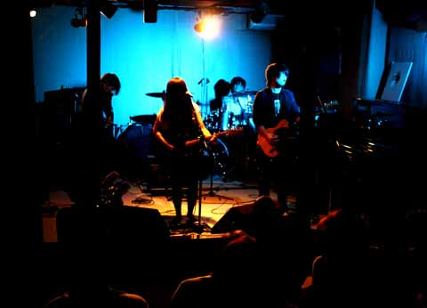

<!DOCTYPE html>
<html lang="ja">

<head>
    <meta charset="UTF-8">
    <meta name="viewport" content="width=device-width, initial-scale=1.0">
    <link rel="stylesheet" href="stylesheet.css">
    <link rel="stylesheet" href="pc.css">
    <link rel="stylesheet" href="tab.css">
    <link rel="stylesheet" href="sp.css">
    <title>ハンドワイヤードガレージ</title>
    <script src="https://ajax.googleapis.com/ajax/libs/jquery/2.1.4/jquery.min.js"></script>
    <script defer src="https://use.fontawesome.com/releases/v5.8.1/js/all.js" integrity="sha384-g5uSoOSBd7KkhAMlnQILrecXvzst9TdC09/VM+pjDTCM+1il8RHz5fKANTFFb+gQ" crossorigin="anonymous"></script>
</head>

<body>

    <!--ここからヘッダー-->

    <header>
        <div id="header-contents">
            <div class="header-content" id="header-icon">
                
            </div>
            <div class="header-content tab-none sp-none" id="header-btns">
                <div class="header-btn" id="header-home-btn">
                    <a href="https://itaboo1014.github.io/hwg-home/.">ホーム</a>
                </div>
                <div class="header-btn" id="header-rec-btn">
                    <a href="https://itaboo1014.github.io/hwg-rec/.">レコーディング</a>
                </div>
                <div class="header-btn" id="header-live-btn">
                    <p>ライブ</p>
                </div>
                <div class="header-btn" id="header-rental-btn">
                    <a href="https://itaboo1014.github.io/hwg-rental/.">スタジオレンタル</a>
                </div>
                <div class="header-btn" id="header-system-btn">
                    <a href="https://itaboo1014.github.io/hwg-system/.">機材/音響</a>
                </div>
                <div class="header-btn" id="header-event-btn">
                    <a href="https://itaboo1014.github.io/hwg-event/.">イベント</a>
                </div>
                <div class="header-btn" id="header-access-btn">
                    <a href="https://itaboo1014.github.io/hwg-access/.">アクセス</a>
                </div>
                <div class="header-btn" id="header-contact-btn">
                    <a href="https://itaboo1014.github.io/hwg-contact/.">お問い合わせ</a>
                </div>
            </div>
            <div class="header-content pc-none" id="header-menu"></div>
        </div>
    </header>
    <div id="header2">
        <div id="header2-contents">
            <div class="header2-content tab-none sp-none" id="header2-btns">
                <div class="header2-btn" id="header2-schedule-btn">
                    <p>ライブスケジュール</p>
                </div>
                <div class="header2-btn" id="header2-recruit-btn">
                    <p>出演者募集</p>
                </div>
                <div class="header2-btn" id="header2-system-btn">
                    <p>ステージ機材/音響システム</p>
                </div>
            </div>
            <div class="header-content pc-none" id="header-menu"></div>
        </div>
    </div>

    <!--ここまでヘッダー-->

    <main>
        <div id="main-contents">
            <div class="main-content" id="main-top-text">
                <h1>ライブ</h1>
                <div id="live-top-img">
                    
                </div>
                <p>ハンドワイヤードガレージは、2012年にライブスペースを増設致しました。倉庫物件を完全手作りで改装。床は全面絨毯張り、土足禁止と言うユニークなスタイルです。
                    <br>音響面では、ライブハウス勤務や、ツアーエンジニアの経験を活かして、理想的な音響設計を追求しました。
                    <br>コンクリートではなく、木材と珪藻土の壁、反射と吸音、拡散を考慮した作りです。音響調節卓も最も音の聴き取りやすい場所に設置。レコーディングスタジオ用のノイズ遮蔽トランス電源を使用しています。
                    <br>良質な音場と居心地の良さを追求しながらも、出来る限り価格設定を下げ、より多くの人が音楽に触れられるように心がけています。
                </p>
            </div>
            <div class="main-content" id="main-schedule">
                <h2>ライブスケジュール</h2>
                <p>(敬称略。出演者は順不同です。出演順ではありません。)</p>
                <div id="schedule-years-btn">
                    <div class="schedule-year-btn schedule-2020-btn">
                        <p>2020</p>
                    </div>
                    <div class="schedule-year-btn schedule-2019-btn">
                        <p>2019</p>
                    </div>
                    <div class="schedule-year-btn schedule-2018-btn">
                        <p>2018</p>
                    </div>
                    <div class="schedule-year-btn schedule-2017-btn">
                        <p>2017</p>
                    </div>
                    <div class="schedule-year-btn schedule-2016-btn">
                        <p>2016</p>
                    </div>
                    <div class="schedule-year-btn schedule-2015-btn">
                        <p>2015</p>
                    </div>
                    <div class="schedule-year-btn schedule-2014-btn">
                        <p>2014</p>
                    </div>
                    <div class="schedule-year-btn schedule-2013-btn">
                        <p>2013</p>
                    </div>
                    <div class="schedule-year-btn schedule-2012-btn">
                        <p>2012</p>
                    </div>
                </div>

            </div>
            <div class="main-content" id="main-recruit">
                <h2>出演者募集</h2>
                <p>北初富HandwiredGarageではライブイベントの出演者を募集しています。
                    <br>
                    <br>ライブハウスのように毎日ライブイベントは在りませんが、より多くの方にステージに上がって頂けるよう、
                    <br>ノルマは出来る限り安く設定しています。
                    <br>
                    <br>レコーディングスタジオに併設したスペースのため、ステージ機材が充実しています。
                    <br>ドラムセットはYAMAHA OAK Custom、ベースアンプはEDEN、もちろん Marshall JCM2000 やJCもスタンバイしています。
                    <br>
                    <br>ジャンルの制限はありません。出演するイベントについてはブッキング担当までご相談下さい。
                </p>
                <div class="live-system-detail-btn">
                    <p>ライブシステム/ノルマの詳細はこちら</p>
                </div>
            </div>
            <div class="main-content" id="main-system">
                <h2>ステージ機材/音響システム</h2>
                <p>ステージ常設機材
                    <br>
                    <br>ドラムセット
                    <br>・YAMAHA OAK Custom / BD 22"/ FT16"/ LT 10"/ HT 8"
                    <br>・スネアドラム / Pearl フリーフローティング、キャストアルミ / YAMAHA ステージカスタム 13"
                    <br>
                    <br>ベースアンプ
                    <br>・EDEN WT600 RodeRunner + EDEN D410 XLT8 + EDEN D118XL + ラックチューナー
                    <br>・Ashdown MAG250 (250w、15インチスピーカのコンポアンプ)
                    <br>
                    <br>ギターアンプ
                    <br>・Marshall DSL + Marshall 1960A (キャビネット=16オーム専用)
                    <br>・Roland JC-77
                    <br>・Fender DeVille 212
                    <br>・VOX AC-30 (現在調整中)
                    <br>
                    <br>アップライトピアノ
                    <br>・KAWAI K-50 (純アコースティックピアノ)
                    <br>
                    <br>電子ピアノ、シンセ
                    <br>・YAMAHA P-125 (88Key)
                    <br>・Roland JUNO-DS (61Key)
                    <br>
                    <br>
                    <br>PAシステム
                    <br>
                    <br>メインコンソール
                    <br>・YAMAHA 02R96 Ver2
                    <br>メインスピーカー
                    <br>・YAMAHA DSR215 2本 (Powered)
                    <br>サブウーハー
                    <br>・YAMAHA DSR118W (Powered)
                    <br>
                    <br>モニタースピーカー
                    <br>・YAMAHA SM12V 2本 (フロアモニター、PowerAmp YAMAHA PC3301N)
                    <br>・YAMAHA CBR10 2本 (天井吊り、PowerAmp YAMAHA PC3301N)
                    <br>・YAMAHA DXR12 (ドラムモニター、Powered)
                    <br>・YAMAHA SM10IV 2本 (フロアモニター予備設備、PowerAmp YAMAHA XP2500)
                    <br>
                    <br>
                    <br>マイクロフォン
                    <br>
                    <br>・Shure SM58 (7本)
                    <br>・Shure SM57 (8本)
                    <br>・audio-technica ATW-1102 (ワイアレスマイク 2本)
                    <br>・audio-technica ATM-25
                    <br>・audio-technica AE3000 (2本)
                    <br>・AKG C451 (2本)
                    <br>・AKG C391
                    <br>他多数常備、詳しくは、Handwired Garage <span><a href="https://itaboo1014.github.io/hwg-system/.">機材/音響</a></span> をご参照下さい。
                    <br>
                </p>
            </div>
        </div>

        <!--ここからフッター共通事項ー-->

        <footer>
            <div id="footer">
                <div id="footer-contents">
                    <div id="footer-btns">
                        <div class="footer-btn" id="youtube-footer-btn"><a href="https://www.youtube.com/channel/UCDAn_h8MO2KPPwDyTSBRm-w" target="_blank"><span class="fab fa-youtube"></span></a></div>
                        <div class="footer-btn" id="insta-footer-btn"><a href="https://www.instagram.com/handwiredgarage/" target="_blank"><span class="fab fa-instagram"></span></a></div>
                        <div class="footer-btn" id="twitter-footer-btn"><a href="https://twitter.com/HandwiredGarage" target="_blank"><span class="fab fa-twitter"></span></a></div>
                        <div class="footer-btn" id="mail-footer-btn"><a href="mailto:elekiteru@ezweb.ne.jp?subject=件名" target="_blank"><span class="fa fa-envelope"></span></a></div>
                    </div>
                    <div id="footer-icon">
                        <p>@2020 Designed by Hiroki Itabashi</p>
                    </div>
                </div>
            </div>
        </footer>

        <!--ここまでフッター共通事項ー-->

    </main>

    <!--メインコンテンツのモーダル部分-->

    <div class="main-content-hide" id="main--popup">
        <div class="popup-content" id="-pop">
            <div class="popup-content-close-btn">
                <p><span class="fa fa-times"></span></p>
            </div>
            <div class="popup-content-text-rec-detail">
                <h3></h3>
                <p></p>
            </div>
        </div>
    </div>

    <div class="main-content-hide" id="main--popup">
        <div class="popup-content" id="-pop">
            <div class="popup-content-close-btn">
                <p><span class="fa fa-times"></span></p>
            </div>
            <div class="popup-content-text-rec-detail">
                <h3></h3>
                <p></p>
            </div>
        </div>
    </div>

    <div class="main-content-hide" id="main--popup">
        <div class="popup-content" id="-pop">
            <div class="popup-content-close-btn">
                <p><span class="fa fa-times"></span></p>
            </div>
            <div class="popup-content-text-rec-detail">
                <h3></h3>
                <p></p>
            </div>
        </div>
    </div>

    <div class="main-content-hide" id="main--popup">
        <div class="popup-content" id="-pop">
            <div class="popup-content-close-btn">
                <p><span class="fa fa-times"></span></p>
            </div>
            <div class="popup-content-text-rec-detail">
                <h3></h3>
                <p></p>
            </div>
        </div>
    </div>

    <div class="main-content-hide" id="main--popup">
        <div class="popup-content" id="-pop">
            <div class="popup-content-close-btn">
                <p><span class="fa fa-times"></span></p>
            </div>
            <div class="popup-content-text-rec-detail">
                <h3></h3>
                <p></p>
            </div>
        </div>
    </div>
    <div class="main-content-hide" id="main-schedule-popup">
        <div class="popup-content" id="schedule-2020-pop">
            <div class="popup-content-close-btn">
                <p><span class="fa fa-times"></span></p>
            </div>
            <div class="popup-content-text">
                <h3>2020年</h3>
                <p>1月18日(土) 高校生交流会 vol.170
                    <br>16時オープン、16時30分スタート
                    <br>出演者 : バナナはおやつに入りますか (市立船橋)、
                    <br>シンセサイダー (船橋東)、煌々、そるとさわー (鎌ヶ谷)、
                    <br>ボクラリゲル、Freesia (松戸国際)
                    <br>チケット代 : 高校生 700円+1drink150円
                    <br>一般 : 1,400円+1drink300円～
                    <br>
                    <br>
                    <br>1月19日(日) 藤咲 & やまいぬ企画
                    <br>「オープンマイクのこちら側」
                    <br>16時30分オープン、17時スタート
                    <br>出演者 : まちやままい(オープニングアクト)、やまいぬ、
                    <br>ゲオルゲ、MINT、 takspice、 辻将吾、
                    <br>オープンマイクバンド
                    <br>チケット代 : 2,000円+1drink (高校生以下半額)
                    <br>
                    <br>
                    <br>1月24日(金) ドラム講座=講師=杉本さおり
                    <br>講座料 : 一般700円+1drink
                    <br>高校生以下 : 350円+1drink
                    <br>
                    <br>
                    <br>1月25日(日) 北初富コンピレーションアルバム
                    <br>レコ発ライブ「周回軌道の遭遇」
                    <br>17時オープン、17時30分スタート
                    <br>出演者 : ひなこ、市原一雄、超時空お弁当箱、
                    <br>腹ヲドリ三丁目、かみひろ
                    <br>チケット代 : 高校生 700円+1drink150円
                    <br>一般 : 1,400円+1drink300円～
                    <br>
                    <br>
                    <br>1月26日(日) 高校生交流会 vol.171
                    <br>16時オープン、16時30分スタート
                    <br>出演者 : 閃光少女 (小金)、Resist (船橋東、秀明八千代)、
                    <br>Chou Chou (松国)、The cloth river、No Name (鎌ヶ谷)、
                    <br>ネザーランドドワーフ (六実、市松、松国)、
                    <br>ぽんでりんぐ（六実）
                    <br>チケット代 : 高校生 700円+1drink150円
                    <br>一般 : 1,400円+1drink300円～
                    <br>
                    <br>
                    <br>1月30日(木) オープンマイク vol.121
                    <br>1月のオープンマイクは1回のみの開催です。
                    <br>17時オープン、19時スタート
                    <br>参加費 : 一般 : 1,400円+1drink300円～
                    <br>高校生 700円+1drink150円
                    <br>
                    <br>
                    <br>2月1日(土)、2日(日) デザフェス?
                    <br>北初富のデザイナー、イラストレーターたちの展示即売会
                    <br>参加アーティスト = さくらぽ、杉浦タツト、市原一雄、
                    <br>キャダ、ようこ、たてのゆらら、はるひ、まいふぉい、他
                    <br>フリーマーケット = かさめい、今泉
                    <br>チケット代無料 : 1ドリンクオーダー
                    <br>
                    <br>
                    <br>2月9日(日) かみひろ企画
                    <br>出演者 : さとじゅん、Leisured_man、杉浦タツト、
                    <br>MONOSQUALL、
                    <br>山本天佑 present ミルクティー & The Hot night Futures
                    <br>チケット代 : 一般 : 1,400円+1drink300円～
                    <br>高校生 700円+1drink150円
                    <br>
                    <br>
                    <br>2月11日(火) 高校生交流会 vol.172
                    <br>16時オープン、16時30分スタート
                    <br>出演者 : かそか (小金)、unknown (鎌ヶ谷)、
                    <br>愛してるカツ丼 (船橋東、六実、鎌ヶ谷)、他
                    <br>チケット代 : 高校生 700円+1drink150円
                    <br>一般 : 1,400円+1drink300円～
                    <br>
                    <br>
                    <br>2月12日(水) 高校生交流会 vol.173
                    <br>16時オープン、16時30分スタート
                    <br>
                    <br>
                    <br>2月13日(木) 高校生交流会 vol.174
                    <br>16時オープン、16時30分スタート
                    <br>
                    <br>
                    <br>2月14日(金) 松戸国際高校企画
                    <br>
                    <br>
                    <br>2月15日(土) 企画開催
                    <br>
                    <br>
                    <br>2月16日(日) 企画開催
                    <br>
                    <br>
                    <br>2月18日(火) 放課後ライブ、北初富軽音楽部 vol.25
                    <br>17時オープン、18時スタート
                    <br>参加費 : 高校生 700円+1drink 150円、
                    <br>大学生、専門生 1,400円+1drink 300円～
                    <br>(見学のみの方は ドリング代 300円～)
                    <br>
                    <br>
                    <br>2月20日(木) オープンマイク vol.122
                    <br>2月のオープンマイクは1回のみの開催です。
                    <br>17時オープン、19時スタート
                    <br>参加費 : 一般 : 1,400円+1drink300円～
                    <br>高校生 700円+1drink150円
                    <br>
                    <br>
                    <br>2月22日(土) 高校生交流会 vol.175
                    <br>16時オープン、16時30分スタート
                    <br>出演者 : mint. (小金)、いとをかし。(松国、柏の葉)、他
                    <br>
                    <br>
                    <br>2月23日(日) タイトルイベント 「天候の記憶」
                    <br>出演者募集中
                    <br>
                    <br>
                    <br>2月29日(土) じゅうたく企画
                    <br>
                    <br>
                    <br>3月1日(日) かみひろ企画
                    <br>
                    <br>
                    <br>3月2日(月) 放課後ライブ (拡大版)
                    <br>
                    <br>
                    <br>3月10日(火) オープンマイク vol.123
                    <br>3月のオープンマイクは1回のみの開催です。
                    <br>
                    <br>
                    <br>3月18日(水) じゅうたく企画
                    <br>
                    <br>
                    <br>3月20日(金) 市立船橋高校企画
                    <br>
                    <br>
                    <br>3月21日(土) HWG主催卒業ライブ1日目 (交流会176)
                    <br>
                    <br>
                    <br>3月22日(日) 某高校卒業ライブ(予定)
                    <br>
                    <br>
                    <br>3月25日(水) 高校生交流会 vol.177
                    <br>
                    <br>
                    <br>3月26日(木) HWG主催卒業ライブ2日目 (交流会178)
                    <br>
                    <br>
                    <br>3月27日(金) 鎌ヶ谷高校軽音部、卒業企画1日目
                    <br>
                    <br>
                    <br>3月28日(土) 鎌ヶ谷高校軽音部、卒業企画2日目
                    <br>
                    <br>
                    <br>3月29日(日) とみじろう企画(仮)
                    <br>
                    <br>
                    <br>3月30日(月) Leisured_man主催企画
                    <br>
                    <br>
                    <br>3月31日(火) HWG主催卒業ライブ3日目 (交流会179)
                    <br>
                    <br>
                    <br>
                </p>
            </div>
        </div>
        <div class="popup-content" id="schedule-2019-pop">
            <div class="popup-content-close-btn">
                <p><span class="fa fa-times"></span></p>
            </div>
            <div class="popup-content-text">
                <h3>2019年</h3>
                <p>情報がありません</p>
            </div>
        </div>
        <div class="popup-content" id="schedule-2018-pop">
            <div class="popup-content-close-btn">
                <p><span class="fa fa-times"></span></p>
            </div>
            <div class="popup-content-text">
                <h3>2018年</h3>
                <p>12月31日(月) 北初富の年越し (606)
                    <br>
                    <br>12月29日(土) 紅緒座長公演 「師走の宵に胡蝶舞う」(605)
                    <br>出演者 : babble coaster band、 シャンソン夫婦、youzo、jukejoints with Benio
                    <br>
                    <br>12月26日(水) 高校生交流会 vol.124 (604)
                    <br>出演者 : Re:write (松戸六実)、ボクラリゲル、Again And Again (松戸国際)、解散三秒前 (小金)、ハイドランジア (船橋東)
                    <br>
                    <br>12月24日(月祝) 鎌ヶ谷高校軽音部企画「雨は聖夜に音楽へと変わるだろう」(603)
                    <br>出演者 : 嘘団、CUBE、unknown、笹井バンド、asterisk* 、気違い日和、ティアドロップ、双夢灯、空図、Ambitious、やまだバンド、 Sign
                    <br>
                    <br>12月22日(土) 高校生交流会 vol.123 (602)
                    <br>出演者 : かそか(ex:Depopulation)、Sate Light. (小金)、Leisured_man (市松・馬橋・流山南・牛久)、拙者たち。 (市立船橋)
                    <br>
                    <br>12月20日(木) オープンマイク vol.102 (601)
                    <br>
                    <br>12月16日(日) 年の終わりの始発点 (0600)
                    <br>出演者 : 佐久間 元樹、ゆの (たまゆら)、相楽祐介、Anmutburg
                    <br>
                    <br>12月15日(土) 放課後ライブ、北初富軽音楽部 vol.9 (0599)
                    <br>
                    <br>12月14日(金) 歩いて北初富まで来よう (vol.2)
                    <br>
                    <br>12月8日(土) 行司光について考える
                    <br>
                    <br>12月7日(土) 映画鑑賞会
                    <br>
                    <br>12月4日(火) オープンマイク vol.101 (0598)
                    <br>
                    <br>12月1日(土) のださとし企画「ここに集えば vol.2 -神々しい者たち編-」(0597)
                    <br>出演者 : のださとし、えりな&轟DUO、まっと、chee
                    <br>
                    <br>11月23日(金祝) COPYBAND STATION SUPERLIVE 2018 (0596)
                    <br>出演者 : ナツメローズ・レディ、ユキバンド、99ﾕS、プリキュアバンド、CROSSOVER、She Is Mighty Angel
                    <br>
                    <br>11月22日(木) オープンマイク vol.100 (0595)
                    <br>
                    <br>11月18日(日) 高校生交流会 vol.122 (0594)
                    <br>出演者 : やまだバンド、花椰菜(鎌ヶ谷)、quatre amis、Again and Again (松戸国際)、バナナはおやつに入りますか？(市立船橋)、mint.(小金)
                    <br>
                    <br>11月17日(土) 船橋東高校企画「FES(Funabashi East Stage) vol.1」(0593)
                    <br>出演者 : シャッフルバンド、DoomRoom、Never Peaks、Pentagram、名無しの69、鳥谷部竜冬、ハイドランジア、#曖昧SHARP
                    <br>
                    <br>11月15日(木) 放課後ライブ、北初富軽音楽部 vol.8 (0592)
                    <br>
                    <br>11月11日(日) 高校生交流会 vol.121 (0591)
                    <br>出演者 : Loｰop、Joker (市川)、アイノシ、ティアドロップ (鎌ヶ谷)、Eterna、Glanz Herz (松戸国際)、Sate Light. (小金)
                    <br>
                    <br>11月10日(土) 小金高校AMC企画「青春大百科」(0590)
                    <br>出演者 : ミルクティー、ハルヒナ、3度寝パラダイス、dAwg、あずさ、律花
                    <br>
                    <br>11月8日(木) 高校生バンド講座、エフェクター編
                    <br>講師=ツカモトセイヤ (Pendulumsiren)
                    <br>
                    <br>11月6日(火) オープンマイク vol.99 (0589)
                    <br>
                    <br>11月4日(日) 高校生交流会 Vol.120 (0588)
                    <br>出演者 : The Fruit Ole、whistle (松戸六実)、ボクラリゲル (松戸国際)、Lycoris、Azrite of Halcyon (小金)
                    <br>
                    <br>11月3日(土) 「色彩に結びついた感情論」(0587)
                    <br>出演者 : ゆの(たまゆら)、じぇりぃふぃっしゅ、Q&A、杉浦タツト、相良祐介
                    <br>
                    <br>11月2日(金) 高校生交流会 vol.118 振替公演 (0586)
                    <br>出演者 : アルストロメリア (松戸六実)、Ciel fool、Throne the empire (松戸国際)、Depopulation (小金)
                    <br>
                    <br>10月28日(日) 相楽祐介企画「さがらんど」(0585)
                    <br>出演者 : かみひろ、さがらんどばんど、超時空お弁当箱、たまゆら、Noah、フィーバー、相楽 祐介
                    <br>
                    <br>10月27日(土) ヒトイロ・かほり企画 「20代のわすれもの」(0584)
                    <br>出演者 : ヒトイロ、忘彩霞-ホウセンカ-、百瀬あざみとイタズラボーイズ、almarsoup、なみしんじのヤツ、しげる×ごうし or the quiet
                    <br>
                    <br>10月26日(金)「歩いて北初富まで来よう」
                    <br>
                    <br>10月11日(木) 放課後ライブ、北初富軽音楽部 vol.7 (0583)
                    <br>
                    <br>10月9日(火) オープンマイク vol.97 (0582)
                    <br>
                    <br>10月8日(月祝) 高校生交流会 vol.118 (0581)
                    <br>出演者 : High Mode、Sign (鎌ヶ谷)、HERZ UN COUER (柏南)、エンドラーズ・ライブベアラ(野田中央)、She Is Mighty Angel (二和)、Eternally Time (松戸国際)
                    <br>
                    <br>10月7日(日) 北初富文化祭 (0580)
                    <br>Light Stage : 相楽 祐介、THE FOOL REGULUS、さんてぃ、陽キャになれなかった人たち、laugh and grow fat
                    <br>Glass Stage : RINGS、律花、市原一雄、佐久間元樹、涼音、たまゆら
                    <br>
                    <br>10月1日(月) 小金高校軽音部企画「SUNWARD～小瓶のなかの小さな世界～」(0579)
                    <br>出演者 : Sate Light. 、Wether Tuner、じぇりぃふぃっしゅ、藍音、Anfini
                    <br>
                    <br>9月30日(日) 高校生交流会 vol.118 (台風24号の影響により中止、振替公演を予定)
                    <br>予定していた出演者 : Ciel fool、Throne the empire (松戸国際)、Depopulation、mint. (小金)、点と点で線 (市立船橋)、アルストロメリア、Spica (六実)
                    <br>
                    <br>9月27日(木) オープンマイク vol.96 (0578)
                    <br>
                    <br>9月24日(月祝) 高校生交流会 vol.117 (0577)
                    <br>出演者 : Spear-MINT、カナリア (市川)、Petrichor (柏南)、ピコグラム、Clover (六実)、VIXI (松戸国際)、Nawe、asterisk* (鎌ヶ谷)
                    <br>
                    <br>9月23日(日) 高校生交流会 vol.116 (0576)
                    <br>出演者 : Anfini、ミルクティー、Sate Light. (小金)、Frischer Glanz (六実)、Glanz Herz (松戸国際)、Doom Room (船橋東)、花椰菜 (鎌ヶ谷)
                    <br>
                    <br>9月19日 (水) 放課後ライブ、北初富軽音楽部 vol.6 (0575)
                    <br>
                    <br>9月17日(月祝) 高校生交流会 vol.115 (0574)
                    <br>出演者 : Asymmetry、Eterna (松戸国際) ♯曖昧SHARP (船橋東)、Lycoris、Azrite of Halcyon (小金)、ティアドロップ、Unknown (鎌ヶ谷)、Leisured_man (市立松戸、馬橋、流山南、牛久)
                    <br>
                    <br>9月16日(日) フィーバーレコ発企画 "2/3" (0573)
                    <br>出演者 : フィーバー、シャドー・オブ・ザ・きゃた2、シャボン、フィーバー・バンド・プロジェクト・TYPEｰ
                    <br>
                    <br>9月11日(火) オープンマイク vol.95 (0572)
                    <br>
                    <br>8月26日(日) 真夏の夜の夢 (0571)
                    <br>出演者 : かみひろ、ゆの (たまゆら)、おやすみリリィ、猫とランプ、相楽祐介(バンド)
                    <br>
                    <br>8月25日(土) 紗莎 企画「今日という日に」(0570)
                    <br>出演者 : 紗莎、たまゆら、すみレ、Q&A
                    <br>
                    <br>8月23日(水) 六実、船橋東高校 PA講習会
                    <br>
                    <br>8月20日(月) 高校生交流会 vol.114 (0569)
                    <br>出演者 : She Is Mighty Angel (二和)、Cube、さりお (鎌ヶ谷)、MNMNY (柏南)、和同開珎 (市立船橋)、ボクラリゲル (松戸国際)
                    <br>
                    <br>8月19日(日) ちゅうひな × あきひろ企画 「同窓会ライブ2018」(0568)
                    <br>出演者 : りんご飴、うちやま しの、Lonely Rolly、あきひろバンド、同窓会バンド
                    <br>
                    <br>8月17日(金) アンドウミサ企画 「星の生まれる日 vol.10」(0567)
                    <br>出演者 : 杏仁豆腐とおしるこ太郎、Debbiehemlock、ウルトラマン、沼田謙二朗、ギャスコイ
                    <br>
                    <br>8月16日(木) 鎌ヶ谷高校PA講習会
                    <br>
                    <br>8月15日(水) THE FOOL REGULUS ? The Fruit Ole 共同企画「私立北初富学園祭」(0566)
                    <br>出演者 : 最前線、Lunchtime、▽▲Black Sheep△▼、エンドラーズ・ライブベアラ、THE FOOL REGULUS、The Fruit Ole
                    <br>
                    <br>8月14日(火) 小金高校PA講習会
                    <br>
                    <br>8月11日(土祝) 出演者 : 古木衆、辻将吾、松本葦立、佐久間元樹、カトウマサタカ、藤咲 (0565)
                    <br>
                    <br>8月7日(火) オープンマイク vol.94 (0564)
                    <br>
                    <br>8月6日(月) 高校生交流会 vol.113 (0563)
                    <br>出演者 : ▽▲Black Sheep△▼ (六実)、Anfini (小金)、High Mode (鎌ヶ谷)、Cross code (市川東)、Leisured_man (市立松戸、馬橋、流山南、牛久)
                    <br>
                    <br> 8月3日(金) 高校生ギター講座 基礎＆メンテナンス編
                    <br> ギター基礎編 講師 : 塚本 聖也 (PENDULUM SIREN)
                    <br> メンテナンス編 講師 : 相楽 祐介 (Liar)
                    <br>
                    <br> 7月29日(日) 高校生交流会 vol.112 (0562)
                    <br> 出演者 : ティアドロップ (鎌ヶ谷)、Eternally Time (松戸国際)、拙者たち。(市立船橋)、アイノシ、律花 (小金)
                    <br>
                    <br> 7月27日(金) 高校生交流会 vol.111 1年生デビューライブ 5日目 (0561)
                    <br> 出演者 : She is Mighty Angel (二和)、Always、mint. (小金)、HERZ UN COEUR (柏南)、Spica、Frischer Glanz (六実)、Fanfare (市川) Guest : 超時空お弁当箱 (市立船橋)
                    <br>
                    <br> 7月26日(木) オープンマイク vol.93 (0560)
                    <br>
                    <br> 7月25日(水) 高校生交流会 vol.110 1年生デビューライブ 4日目 (0559)
                    <br> 出演者 : 明け暮れに花を、LoｰoP (市川)、Azrite of Halcyon、Depopulation (小金)、ゆにこん、Clover (六実)、Throne the empire (松戸国際) Guest : Anfini (小金)
                    <br>
                    <br> 7月23日(月) 船橋二和高校軽音部企画「二和です」 (0558)
                    <br> 出演者 : Viscaria、CLAN、over easy、企画バンド、佐藤舜バンド、Da-iCE face、あいそとーぷ 、鴉-crow-
                    <br>
                    <br> 7月22日(日) 北熱富 vol.8 (0557)
                    <br> 出演者 : THE FOOL REGULUS、Amaze、PENDULUM SIREN、NAP CORPs、クラウディールーム、polyfony
                    <br>
                    <br> 7月21日(土) 「夏はどこから来るのだろうか」 (0556)
                    <br> 出演者 : さとじゅん、Azoth、Ofton、佐久間元樹、トンネルのむこう
                    <br>
                    <br> 7月20日(金) 小金高校軽音部企画 「波枕」 (0555)
                    <br> 出演者 : wheather tuner、時雨の月、Anfini、じぇりぃふぃっしゅ、シャッフルバンド、monochrome crown、CHAOS、新歓バンド
                    <br>
                    <br> 7月18日(水) ひさしのドラム講座 講師 : ひさし (洗足学園音楽大学 ドラム専攻)
                    <br>
                    <br> 7月16日(月祝) 高校生交流会 vol.109 1年生デビューライブ 3日目 (0554)
                    <br> 出演者 : ミルクティー、Sate Light. (小金)、花椰菜 (鎌ヶ谷)、アルストロメリア (六実)、VIXI、Ciel fool、Eterna (松戸国際) Guest : ピコグラム (六実)
                    <br>
                    <br> 7月15日(日) 高校生交流会 vol.108 1年生デビューライブ 2日目 (0553)
                    <br> 出演者 : カナリア (市川)、Unknown (鎌ヶ谷)、ニノニ嫋、Loading Dance (松戸国際)、Canvas (小金)、doomroom (船橋東) Guest : quatre amis (松戸国際)
                    <br>
                    <br> 7月14日(土) 高校生交流会 vol.107 1年生デビューライブ 1日目 (0552)
                    <br> 出演者 : 和同開珎、点と点で線 (市立船橋)、Lycoris (小金)、Petrichor (柏南)、ボクラリゲル、Assymmetry、Glanz Herz (松戸国際) Guest : Spear-MINT (市川)
                    <br>
                    <br> 7月8日(日)「夜に流れる川の名前を考える」(0551)
                    <br> 出演者 : 優奏 (ユウカ)、たまゆら、Noose house (いたばしひろき、サユキ、相楽祐介、佐々木美帆) 、市原一雄、かみひろ
                    <br>
                    <br> 6月30日(土) satomio × あめそこなぎさ 企画 (0550)
                    <br> 「ツユノツキ -ゆったりとお酒と音楽を楽しめる大人会-」
                    <br> 出演者 : fluid、シャボン、たまゆら、しらしら (POP RADIO)
                    <br>
                    <br> 6月28日(木) オープンマイク vol.92 (0549)
                    <br>
                    <br> 6月26日(火) HandwiredGarage主催 高校生向けバンド講座
                    <br> 講師 : ひさし (洗足学園音楽大学 ドラム専攻) 助講師 : かみひろ (HWGスタッフ)
                    <br>
                    <br> 6月24日(日) 千葉エミリ × ローズハルサワa.k.a.春雨ちゃん × ごまどうふ
                    <br> 「共感覚の渋滞」企画 "邂逅"
                    <br>
                    <br> 6月19日 (火) 放課後ライブ、北初富軽音楽部 vol.5 (0548)
                    <br>
                    <br> 6月17日(日) 高校生交流会 vol.106 (0547)
                    <br> 出演者 : CHAOS、Anfini (小金)、拙者たち。(市立船橋)、Leisured_man (市立松戸、馬橋、流山南、牛久)
                    <br>
                    <br> 6月15日(金) 六実高校軽音部企画 "only one" (0546)
                    <br> 出演者 : ■Axis cube□ 、Amaze、Dizzy Dance、3cm、The Fruit Ole、ピコグラム、▽▲Black Sheep△▼
                    <br>
                    <br> 6月10日(日) 小金高校AMC企画「全人類に愛とチョコレートを！」(0545)
                    <br>
                    <br> 出演者 : みつき、オムライス教祖、Coral、くまちゃんず、律花、よこしまストライプ
                    <br>
                    <br> 6月9日(土) 高校生交流会 vol.105 (0544)
                    <br> 出演者 : Dead Tired、あいそとーぷ (船橋二和)、Eternally Time (松戸国際)、▼△Black Sheep△▼ (松戸六実)、♯曖昧SHARP (船橋東)、イニ・クオリティー (柏中央)
                    <br>
                    <br> 6月3日(日) 佐久間元樹 Birthday Live！(0543)
                    <br> 出演者 : 涼音、トンネルのむこう、satomio、佐久間元樹
                    <br>
                    <br> 6月2日(土) カフェイベント (0542)
                    <br> 出演者 : 相楽祐介、杉浦タツト、コウゴ・カナエ、ひふみよ、涼音、鎌田ノク+杏
                    <br>
                    <br> 5月31日(木) オープンマイク vol.91 (0541)
                    <br>
                    <br> 5月26日(土) レイナ企画「紅掛空色の藍」(0540)
                    <br> 出演者 : ■Axis cube □ 、涼音、the quiet、ムラタユスラ、the overs
                    <br>
                    <br> 5月20日(日) 「鎌ヶ谷高校軽音部 引退ライブ」 (2日目) (0539)
                    <br> 出演者 : NAP CORPs、きゃろっと、金平糖、HUMPTY DUMPTY、餃子ず、Metis、天つ風、おかバン、Cookie Monsters
                    <br>
                    <br> 5月19日(土) 「鎌ヶ谷高校軽音部 引退ライブ」 (1日目) (0538)
                    <br> 出演者 : Yuiiis、Ofton、田中バンド、ペトリコール、勿忘草、Nawe
                    <br>
                    <br> 5月13日(日) 高校生交流会 vol.104 (0537)
                    <br> 出演者 : 三色ライス (市川)、ペトリコール、金平糖 (鎌ヶ谷)、ROIMARU CIGARETTES (二和・六実)、ピコグラム (松戸六実)、ひふみよ (小金)
                    <br>
                    <br> 5月12日(土) 殿、御乱心ワンマンライブ ?帰ってきたジャボチカバ (0536)
                    <br> 出演者 : 殿、御乱心
                    <br>
                    <br> 5月6日(日) HWG創立17周年記念ライブ2日目 (0535)
                    <br> 出演者 : かみひろ、PeachTea、Polyfony、プライベートコンセプト、涼音(Band)
                    <br>
                    <br> 5月5日(土祝) HWG創立17周年記念ライブ1日目 (0534)
                    <br> 出演者 : One&One、佐久間元樹、シャボン、Carbon Infection、CRｯSSOVER
                    <br>
                    <br> 5月4日(金祝) 高校生交流会 vol.103 (0533)
                    <br>
                    <br> 出演者 : 田中バンド、Ofton、Nawe (鎌ヶ谷)、Anfini (小金)、 Spear-MINT (市川)
                    <br>
                    <br> 5月3日(木祝) 鎌ヶ谷高校新入生歓迎ライブ (0532)
                    <br> 出演者 : ヤマダバンド、双夢灯、アオイトリ、High Mode、さりお、Percentage%
                    <br>
                    <br> 5月2日(水) とびさわあかね帰国企画「Bienvenue chez moi 」(0531)
                    <br> 出演者 : 川崎洋輔 (ポラロイズ)、松本葦立 (almar soup) 、ミノノミサト、kom!
                    <br>
                    <br> 4月30日(月祝) 高校生交流会 vol.102 (0530)
                    <br> 出演者 : 小夏、Monochrome Crown (小金)、Free Color、Viscaria (船橋二和)、Humpty Dumpty、Cube (鎌ヶ谷)、超時空お弁当箱 (市立船橋)
                    <br>
                    <br> 4月29日(日) 橘うた レコ発企画 「夢が生まれる場所 vol.2」(0529)
                    <br> 出演者 : トンネルのむこう、フィーバー、たまゆら、橘うた、じぇりぃふぃっしゅ
                    <br>
                    <br> 4月28日(土) かみひろ企画 "北熱富vol.7" (0528)
                    <br> 出演者 : The Fruit Ole (O.A)、CHAOS、Liar、勿忘草、Noah、The Fairy Queen
                    <br>
                    <br> 4月26日(木) オープンマイク vol.90 (0527)
                    <br>
                    <br> 4月22日(日) NeMo birthday party live 2018 (0526)
                    <br> 出演者 : thank you for coming、エディのウララ、マリールー、ビーグルチーム、ワイルドチーム、じゃんぐるバンド
                    <br>
                    <br> 4月21日(土) 鎌高ダンス部×軽音部企画 "Entertainment in Dream vol.5" (0525)
                    <br> 出演者 : 鎌ヶ谷高校ダンス部有志、金平糖、おかバン、空図(カラーズ)
                    <br>
                    <br> 4月14日(土) 高校生交流会 vol.101 (0524)
                    <br> 出演者 : Amaze、みつき (六実)、Yuiiis、Nawe (鎌ヶ谷)、quatre amis (松戸国際)、Coral (小金)、Cross Code (市川東)
                    <br>
                    <br> 4月12日(木) 放課後ライブ、北初富軽音楽部 vol.4 (0523)
                    <br>
                    <br> 4月10日(火) オープンマイク vol.89 (0522)
                    <br>
                    <br> 4月8日(日) 「春に音楽を歌わせて」(0521)
                    <br> 出演者 : Sky Day、まじゅりす谷藤、なにやってんの、アナタの郡さん
                    <br>
                    <br> 4月7日(土) 高校生交流会 vol.100 (0520)
                    <br> 出演者 : The FLaT、Wild Beast、■Axis cube□ (松戸六実)、鴉ｰcrowｰ、(船橋二和)、勿忘草 (鎌ヶ谷)、じぇりぃふぃっしゅ (小金)
                    <br>
                    <br> 3月31日(土) HWG主催卒業ライブ 3日目 (0519)
                    <br> 出演者 : Lonery Rolly (鎌ヶ谷)、birtheight (市川・東邦・流経大柏)、ヨシカワタマオ (船橋東)、Navy Earth (市川)、Peach Tea (小金)
                    <br>
                    <br> 3月28日(水) HWG主催卒業ライブ 2日目 (0518)
                    <br> 出演者 : 光パレット (市川)、Glue (船橋東)、たまゆら (実籾・小金)、RINGS (鎌ヶ谷西・千葉大宮)、杉浦 タツト (松戸国際)
                    <br>
                    <br> 3月27日(土) 高校生交流会 vol.99 (0517)
                    <br> 出演者 : 翡翠の葡萄 (市立船橋)、Carbon Infection、The Fruit Ole (松戸六実)、あいそとーぷ (船橋二和)、Eternally Time (松戸国際)、NAP CORPs (鎌ヶ谷)
                    <br>
                    <br> 3月26日(月) 鎌ヶ谷高校卒業ライブ (0516)
                    <br> 出演者 : Lonely Rolly、クロコ、ぱっきゃまらーど、妖怪まふまふ、きゃろっと、田中バンド、Yuiiis
                    <br>
                    <br> 3月25日(日) 橘うた、相楽祐介共同企画「春、別れ。～また会える日まで」(0515)
                    <br> 出演者 : 橘うた、相楽祐介、涼音、PENDULUM SIREN
                    <br>
                    <br> 3月24日(土) 小金高校卒業ライブ 「終わりと始まりのプロローグ」(0514)
                    <br> 出演者 : asphalt、Playing with us、Watch More Porn、ゆの、新歓バンド
                    <br>
                    <br> 3月23日(金) HWG主催卒業ライブ 1日目 (0513)
                    <br> 出演者 : 相楽 祐介 (船橋二和)、ぱっきゃまらーど、妖怪まふまふ (鎌ヶ谷)、板橋 ヒロキ (柏稜)
                    <br>
                    <br> 3月22日(木) オープンマイク vol.88 (0512)
                    <br>
                    <br> 3月21日(水、祝) Chemical Reaction "LASTLIVE" (0511)
                    <br> 出演者 : 後夜祭バンド、The Fruit Ole、Dizzy Dance、涼音、Chemical Reaction
                    <br>
                    <br> 3月17日(土) 高校生交流会 vol.98 (0510)
                    <br> 出演者 : 6Men賽子 (船橋東・六実)、天つ風、きゃろっと (鎌ヶ谷)、ピコグラム (松戸六実)、Fif-Ties (市川)、Peach Tea (小金)
                    <br>
                    <br> 3月15日(木) ANIMAL FARMレコ発企画 (0509)
                    <br> 出演者 : ANIMAL FARM、かみひろ、PENDULUM SIREN、涼音、夕暮れの動物園
                    <br>
                    <br> 3月14日(水) Nora × Cemical Reaction ツーマンライブ「0817」(0508)
                    <br> 出演者 : Nora、Cemical Reaction
                    <br>
                    <br> 3月6日(火) オープンマイク vol.87 (0507)
                    <br>
                    <br> 3月4日(日) 学生向け作曲セミナー 主催 : kooge
                    <br>
                    <br> 3月1日(木) 高校生コンピレーションアルバム「自作自演」 レコ発ライブ (0507)
                    <br> 出演者 : NAP CORPs、Amaze、■Axis cube□、CHAOS、たまゆら、相楽 祐介
                    <br>
                    <br> 2月25日(日) 「真冬の透明な音楽祭」(0506)
                    <br> 出演者 : coral、渡瀬 里咲、Peek-a-boo！、相楽 祐介、じぇりぃふぃっしゅ、涼音
                    <br>
                    <br> 2月24日(土) みつき、ほんじょう、まの企画「紅白歌合戦」(0505)
                    <br> 出演者 : そいそーす。、arincoo+、The Fluit Ole、碧 from Dizzy Dance、THE FOOL REGULUS、Under the Mother
                    <br>
                    <br> 2月18日(日) 「落ち葉の下には何か隠し事があるはずだ」(0504)
                    <br> 出演者 : PeachTea、中川テツタ、くろこば、佐久間元樹、餃子ず、さとじゅん
                    <br>
                    <br> 2月17日(土) 高校生交流会 Vol.97 (0503)
                    <br> 出演者 : キログラム(仮)、ENIGMA (六実)、金平糖、田中バンド (鎌ヶ谷)、Free Color (二和)、School Girl's Fiction (市川)、ハイドランジア (船橋東)
                    <br>
                    <br> 2月14日(水) 松戸国際高校企画 バレンタイン大作戦 ～あの子のハートを掴み取れ～ (0502)
                    <br> 出演者 : ft.、empty rhapsody、ホワイトビタミン、Remainder、the fool regulus、quatre amis、Eternally Time
                    <br>
                    <br> 2月13日(火) 高校生交流会 Vol.96 (0501)
                    <br> 出演者 : Amy、Da-iCE facE (船橋二和)、▼△Black Sheep△▼ (松戸六実)、か☆く☆ら (六実・鎌西・小金)、LOVIN' 、 杉浦トモヒト (松戸国際)、Monochrome Crown (小金)
                    <br>
                    <br> 2月11日(日) かみひろ企画、北熱富vol.6 (HWGライブ開催500回)
                    <br> 出演者 : Anfini(O.A)、■Axis cube□、サクラダユウト from STANDBACK、そいそーす。、山本天佑 from Gold adorer orchestra、the overs
                    <br>
                    <br> 2月9日(金) 映画鑑賞会
                    <br> 映画担当=ゆの、フード担当=餃子ず
                    <br>
                    <br> 2月6日(火) オープンマイク vol.85 (499)
                    <br> 2月4日(日) かみひろ × MUDSNAIL企画 冷凍都市鎌ヶ谷の暮らし。(498)
                    <br> 出演者 : MUDSNAIL、シャボン、相楽祐介、NAP CORPs、かみひろ
                    <br>
                    <br> 2月3日(土) 高校生交流会 Vol.95 (497)
                    <br> 出演者 : たまゆら (実籾・小金)、Viscaria (船橋二和)、arincco+、＃曖昧SHARP (船橋東)、ピコグラム (松戸六実)、 勿忘草、Nawe (鎌ヶ谷)
                    <br>
                    <br> 1月27日(土) 六実高校軽音部企画「TEENAGER」(496)
                    <br> 出演者 : Amaze、ENIGMA、Dizzy Dance、Carbon Infection、3cm、The Fruit Ole、□Axis cube■
                    <br>
                    <br> 1月25日(木) オープンマイク vol.84 (495)
                    <br>
                    <br> 1月20日(土) 小金高校軽音部企画「観世水」(かんぜみず) (494)
                    <br> 出演者 : 時雨の月、ひふみよ、monochrome crown、CHAOS、Anfini、風待月に
                    <br>
                    <br> 1月17日(水) 放課後ライブ = 北初富軽音楽部 vol.3 (493)
                    <br>
                    <br> 1月14日(日) 高校生交流会 Vol.94 (492)
                    <br> 出演者 : Free Color (船橋二和)、 Wire Puller (松国)、 きゃろっと、双夢灯 (鎌ヶ谷)、 cross code (市川東)、 超時空お弁当箱 (市立船橋)
                    <br>
                    <br> 1月8日(月、祝) 高校生交流会 Vol.93 (491)
                    <br>
                    <br> 出演者 : じぇりぃふぃっしゅ (小金)、 The Fruit Ole、 ENIGMA (松戸六実)、LOVIN'、 Eternally Time (松戸国際)、 天つ風 (鎌ヶ谷)
                    <br>
                    <br> 1月6日(土) 新年会ライブ (490)
                    <br> : Ofton、 そいそーす。、 Megumi、 藤 慎太郎、 橘うた、+ 飛び入り参加
                    <br>
                    <br>
                    <br>
                </p>
            </div>
        </div>
        <div class="popup-content" id="schedule-2017-pop">
            <div class="popup-content-close-btn">
                <p><span class="fa fa-times"></span></p>
            </div>
            <div class="popup-content-text">
                <h3>2017年</h3>
                <p>12月31日(日) 北初富の年越しイベント (0489)
                    <br>出演者 : 橘うた、涼音、たまゆら、てらさわ少年、発展途上おさかな、皆川駿太、市原一雄、松本大地、フィーバー(雨掴み大会)、かみひろ(風船バレーボール)
                    <br>
                    <br>12月30日(土) 貸し切り忘年会ライブ (0488)
                    <br>出演者 : bubble coaster band、apollo 卯 弦界、snap dragon、dead stocks
                    <br>
                    <br>12月27日(水) 鎌ヶ谷高校軽音部企画「北初富から2番目に近い軽音部の茶番」(487)
                    <br>出演者 : NAP CORPs、 きゃろっと、 アオイトリ、 勿忘草、 さりお（仮)、 HUMPTY DUMPTY、 金平糖、 Yuiiis、 田中バンド、 Cookie Monsters
                    <br>
                    <br>12月26日(火) ギターメンテナンス講座 (講師 : 皆川 駿太)
                    <br>
                    <br>12月24日(日) 「正しい夜の過ごし方」(486)
                    <br>出演者 : たまゆら、か☆く☆ら、■Axis cube□、佐久間 元樹、松本 大地
                    <br>
                    <br>12月23日(土) かみひろ企画 北熱富 vol.5 (485)
                    <br>出演者 : Tang spade、発展途上僕、NAP CORPs、THE FOOL REGULUS、Crazy about-U
                    <br>
                    <br>12月22日(金) 映画鑑賞会
                    <br>
                    <br>12月20日(水) 高校生交流会 Vol.92 (484)
                    <br>出演者 : Carbon Infectiion、Front EDGE、▼△Black Sheep△▼ (松戸六実)、CHAOS (小金)、くろこば (松戸国際)
                    <br>
                    <br>12月19日(火) オープンマイク vol.83 (483)
                    <br>
                    <br>12月17日(日) 「完璧とは、少しだけ未完成であること。」(482)
                    <br>17時30分オープン、18時スタート
                    <br>出演者 : 律花、橘うた、トンネルのむこう、のださとし、古木衆、市原一雄(one＆one)
                    <br>
                    <br>12月16日(土) 高校生交流会 Vol.91 (0481)
                    <br>出演者 : Under the Mother (柏南)、ピコグラム (松戸六実)、6Men賽子 (船橋東・松戸六実)、NAP CORPs (鎌ヶ谷)、相楽 祐介、CREST (船橋二和)、quatre amis (松戸国際)
                    <br>
                    <br>11月30日(木) オープンマイク vol.82 (0480)
                    <br>
                    <br>11月26日(日) 佐久間 元樹 レコ発LIVE "UTAKATA" (0479)
                    <br>出演者 : あざらし、ウチダコウキ、トンネルのむこう、fluid、佐久間 元樹
                    <br>
                    <br>11月25日(土) インナーチャイルド "大人の中のこどもの日" (0478)
                    <br>ワークショップ、popolomonica、KURASHI WO RECORD
                    <br>
                    <br>11月23日(木、祝) 二和高校軽音部企画「二和とは」(0477)
                    <br>出演者 : 鴉ｰcrowｰ、Dead Tired、CREST、over easy、Da-iCE facE、あいそとーぷ、企画バンド、Viscalia
                    <br>
                    <br>11月19日(日)ﾊ 藤慎太郎レコ発企画「光」(0476)
                    <br>出演者 : 赤澤 秀駿、シャボン、涼音、佐藤 静奈、藤 慎太郎
                    <br>
                    <br>11月18日(土) れいな企画「琥珀色の夕焼け」(0475)
                    <br>出演者 : 橘うた、相楽 祐介、瀬川 はる、supernova expression、vanished vanity、Montblancz
                    <br>
                    <br>11月12日(日) 高校生交流会 Vol.90 (0474)
                    <br>出演者 : THE FOOL REGULUS (松戸国際)、 Anfini (小金)、Amaze、▼△Black Sheep△▼ (六実)、金平糖、Feeeeling (鎌ヶ谷)
                    <br>
                    <br>11月7日(火) オープンマイク vol.81 (0473)
                    <br>
                    <br>11月5日(日) 高校生交流会 Vol.89 (0472)
                    <br>出演者 : ピコグラム、The Fruit Ole (六実)、 双夢灯、金平糖 (鎌ヶ谷)、 LOVIN' (松戸国際)、 CHAOS (小金)
                    <br>
                    <br>11月3日(金祝) 「例えば明日が来なかったとして」(0471)
                    <br>出演者 : 中川テツタ、Megumi、相楽 祐介、さとじゅん、そいそーす。OA?
                    <br>
                    <br>11月1日(水) 放課後ライブ = 北初富軽音楽部 vol.2 (0470)
                    <br>
                    <br>10月29日(日) 「美しいものを好きになるのに、理由なんて必要だろうか。」(0469)
                    <br>出演者 : 橘うた、藤崎と慎太郎、かみひろ、tiny poodle cafe、酒入 海斗
                    <br>
                    <br>10月28日(土) 高校生交流会 vol.88 (0468)
                    <br>出演者 : CREST、act (二和)、勿忘草 (鎌ヶ谷)、Eternally Time (松戸国際)、じぇりいふぃっしゅ (小金)、FrontEDGE (六実)
                    <br>
                    <br>10月26日(木) オープンマイク vol.80 (0467)
                    <br>
                    <br>10月9日 (月祝) □Axis cube■、Amaze共同企画 「銀鱗躍動」 (0466)
                    <br>出演者 : □Axis cube■、Amaze、シャッフルバンド、 鴉-crow-、 そいそーす。、 NAP CORPs
                    <br>
                    <br>10月8日(日) かみひろ企画"北熱富vol.4" (0465)
                    <br>出演者 : 藍色に紫陽花、Amaze、たまゆら、チバハルキ、MUDSNAIL、相楽 祐介 (司会 : みつき、まの)
                    <br>
                    <br>10月7日(土) 高校生交流会 vol.87 (0464)
                    <br>出演者 : ピコグラム (六実)、quatre amis (松戸国際)、6Men賽子 (船橋東・六実)、さとじゅん (青山学院)、竹部和佳奈 (非公表)、か☆く☆ら (六実・鎌西・小金)、橘うた (小金)
                    <br>
                    <br>10月5日(木) 放課後ライブ = 北初富軽音楽部 vol.1 (0463)
                    <br>
                    <br>10月4日(水) 高校生ギター講座 vol.5 (講師 : 皆川 駿太)
                    <br>
                    <br>10月1日(日) 北初富文化祭 vol.2、2日目 (0462)
                    <br>出演者 : 相楽 祐介、たまゆら、佐久間 元樹、Megumiと渡邊せん、ジョージfeat.ダイチ、ムラタユスラ、涼音、シャボン
                    <br>
                    <br>9月30日(土) 北初富文化祭 vol.2、1日目 (0461)
                    <br>出演者 : 森木 海地、かみひろ、市原 一雄、藤 慎太郎、そいはる、渡瀬 里咲
                    <br>
                    <br>9月24日(日) 高校生バンド交流会 Vol.86 (0460)
                    <br>出演者 : Dead Tired、鴉-crow- (二和)、Dizzy Dance、Front EDGE(六実)、 CHAOS (小金)、C!treA、タコわさ(市川)
                    <br>
                    <br>9月23日(土祝) 高校生交流会 vol.85 (0459)
                    <br>出演者 : Free Color、あいそとーぷ (二和)、双夢灯 (鎌ヶ谷)、じぇりぃふぃっしゅ(小金)、▼△Black Sheep△▼ (六実)、Under the Mother (柏南)
                    <br>
                    <br>9月22日(金) 映画鑑賞+料理研究会 (ラーメン調理担当 : たいよう、デザート担当 : 橘うた)
                    <br>
                    <br>9月21日(木) オープンマイク vol.79 (0459)
                    <br>
                    <br>9月17日(日) 高校生交流会 vol.84 (0458)
                    <br>出演者 : Anfini、藍色に紫陽花 (小金)、□Axis cube■、The Fruit Ole (六実)、勿忘草、Feeeeling!! (鎌ヶ谷)、THE FOOL REGULUS (松戸国際)
                    <br>
                    <br>9月10日(日) One＆Oneレコ発ライブ [GIFT] (0457)
                    <br>出演者 : Sugimoto Saori、フィーバー、One＆One、Uh Huh Honey、Megumi、涼音
                    <br>
                    <br>8月30日(月) 六実高校PA講習会
                    <br>
                    <br>8月28日(月) アンドウミサ企画「星の生まれる日vol.9」(0456)
                    <br>出演者 : クジリ、テアトル・バトー、Debbiehemlock、杏仁豆腐とおしるこ太郎
                    <br>
                    <br>8月26日(土) "COPY BAND STATION Super Live 2017" (0455)
                    <br>出演者 : CREST、Gd2A、りんご100%、ニートルズ、ナツメローズ・レディ
                    <br>
                    <br>8月24日(木) オープンマイク vol.78 (0454)
                    <br>
                    <br>8月23日(水) 高校生交流会 vol.83 (0453)
                    <br>出演者 : Helium (from Carbon Infection) 、The Fruit Ole、Front EDGE (松戸六実)、Nap Corps (鎌ヶ谷)、クレーパーズ、Fif-Ties、最前線 (市川)
                    <br>
                    <br>8月21日(月) 鎌ヶ谷高校PA講習会
                    <br>
                    <br>8月20日(日) 相楽祐介レコ発企画ライブ「さがらんど」 (0452)
                    <br>出演者 : 餃子ず、涼音、橘うた、arincco＋、相楽 祐介
                    <br>
                    <br>8月17日(木) Akihiro × カズ共同企画「青い栞」 (0451)
                    <br>出演者 : 発展途上僕、3cm、あいそとーぷ、涼音、Youthful Clips
                    <br>
                    <br>8月16日(水) 高校生交流会 vol.82 (0450)
                    <br>出演者 : 鴉-crow- (船橋二和)、Under the Mother (柏南)、Metis (鎌ヶ谷)、ロジック、ピコグラム (松戸六実)
                    <br>
                    <br>8月14日(月) 小金高校PA講習会
                    <br>
                    <br>8月12日(月) 「自分という入れものに何を入れよう。」 (0449)
                    <br>出演者 : 青、Peachといっし～、佐久間 元樹、トンネルのむこう、橘うた、藤 慎太郎
                    <br>
                    <br>8月8日(火) 小金高校軽音部、AMC共同企画 『！』雨垂れ (0448)
                    <br>出演者 : フライフライト、chaos、chachette、藍色に紫陽花、ほののとこなつ、風待ち月に
                    <br>
                    <br>8月6日(日) かみひろ企画 ｢北熱富vol.3｣ (0447)
                    <br>出演者 : ft.、Yuiiis、Libido、NO SMOKE、Zoey、Debbiehemlock
                    <br>
                    <br>8月5日(土) かみひろ企画 ｢HighになってひきがたLow｣ (0446)
                    <br>出演者 : 碧 from DizzyDance、尾崎 リノ、酒入 海斗、片桐 志乃、古木 衆
                    <br>
                    <br>8月1日(火) オープンマイク vol.77 (0445)
                    <br>
                    <br>7月31日(月) シャッフルバンド大会 (0444)
                    <br>
                    <br>7月29日(土) 高校生交流会 vol.81 (0443)
                    <br>出演者 : Amaze (六実・柏南)、Dead Tired、CREST (二和)、たまゆら (小金、実籾)、3cm (六実)
                    <br>
                    <br>7月23日(日) そいそーす。× 餃子ず共同企画 "the dinner show" (0442)
                    <br>出演者 : そいそーす。、餃子ず、橘うた、中川テツタ、Amaze、そい餃子バンド
                    <br>
                    <br>7月22日(土) ハルカカナタ企画「感情解放宣言　vol.9」 (0441)
                    <br>出演者 : ハルカカナタ、松崎ナオ、Monoral Zombie、THE Ruee、VERONICA VERONICO、ハルカサナダ (Live Painting、ツチヤヒトミ)
                    <br>
                    <br>7月20日(木) オープンマイク vol.76 (0440)
                    <br>
                    <br>7月17日(月祝) 高校生交流会 vol.80 (0439)
                    <br>出演者 : あいそとーぷ、相楽祐介 (二和)、Carbon Infection、■Axis cube□ (松戸六実)、酒入海斗 with あびちょ (松戸国際)、かがやんバンド (鎌ヶ谷)
                    <br>
                    <br>7月16日(日) 高校生交流会 vol.79 [1年生デビューライブ 2日目] (0438)
                    <br>出演者 : The Fruit Ole、QWINKS、魑魅魍魎 (松戸六実)、じぇりぃふぃっしゅ (小金)、Cereza Mele (柏南)、双夢灯(ふゆあかり) (鎌ヶ谷)、Wire puller (松戸国際)、最前線 (市川)、Free Color (二和)、ゲストバンド : Nora (二和)
                    <br>
                    <br>7月15日(土) 高校生交流会 vol.78 [1年生デビューライブ 1日目] (0437)
                    <br>出演者 : ピコグラム、ロジック、Black Sheep (松戸六実)、Anfini(あんふぃに)、StarRragment (小金)、FrontEDGE (船橋東)、Feeeeling!! (鎌ヶ谷)、Fit-Ties、クレーパーズ (市川)、くろこば (松戸国際)、ゲストバンド : arincco+ (船橋東)
                    <br>
                    <br>7月2日(日)「創音記念日 vol.5」(0436)
                    <br>出演者 : 郡 伸一 (One＆One)、渡瀬 里咲、松本 裕、かみひろ、優奏、瀬川 はる
                    <br>
                    <br>6月22日(木) オープンマイク vol.75 (0435)
                    <br>
                    <br>6月18日(日) PeachTeaレコ発企画「これが、今の私たち vol.3」(0434)
                    <br>出演者 : Peach Tea、■Axis cube□、涼音、そいそーす。、rob
                    <br>
                    <br>6月17日(土) 高校生交流会 vol.77 (0433)
                    <br>出演者 : 鴉 -crow- 、CREST、Libido (二和)、青 (小金)、empty rhapsody (松戸国際)、Cookie Monsters (鎌ヶ谷)
                    <br>
                    <br>6月16日(金) ひさしのドラム講座
                    <br>講師 : ひさし (洗足学園音楽大学 音楽学部 ロック＆ポップス科 ドラム専攻)
                    <br>
                    <br>6月11日(日) 高校生交流会 vol.76 (0432)
                    <br>出演者 : フライフライト (小金)、Rockasen (東邦大付属)、ofton、Carrot (鎌ヶ谷)、Under the Mother (柏南)、Dead Tired (二和)
                    <br>
                    <br>6月10日(土) Wild Beast企画 [ワイビは仲良しですよ～] (0431)
                    <br>出演者 : エレクトリック核弾頭、涼音、しゅーへー(from8585)、Wild Beast
                    <br>
                    <br>6月9日(金) 新入生対象、バンド講座
                    <br>講師 : ひさし (洗足学園音楽大学 音楽学部 ロック＆ポップス科 ドラム専攻)、 助講師 : 諏江
                    <br>
                    <br>6月6日(火) オープンマイク vol.74 (0430)
                    <br>
                    <br>6月4日(日) 大地 & ともな HWG卒業企画 「また会えるかな？」(0429)
                    <br>出演者 : 2/6F、夕暮れの動物園、カワダショウヘイ、ミニカジュアルズ、Wild Beast
                    <br>
                    <br>6月3日(土) 六実高校軽音部企画 「青天の霹靂」(0428)
                    <br>出演者 : ■Axis cube□、脳内お花畑、ASPIRA⇔TION、3cm、Amaze、Chemical Reaction
                    <br>
                    <br>5月27日(土) 涼音レコ発企画「お待たせしました」(0427)
                    <br>出演者 : Peach Tea、中川テツタ、藤 慎太郎、涼音、ムラタユスラ
                    <br>
                    <br>5月25日(木) オープンマイク vol.73 (0426)
                    <br>
                    <br>5月21日(日) HWG16周年記念ライブ (0425)
                    <br>出演者 : シャボン、藤 慎太郎、しゅーへー(from8585)、あしなが木苺、佐久間 元樹、レヴィ
                    <br>
                    <br>5月20日(土) HWG中庭にてバーベーキュー
                    <br>
                    <br>5月13日(土) 高校生交流会 vol.75 (0424)
                    <br>出演者 : あいそとーぷ、Libido、Achilles (二和)、Amaze (松戸六実・柏南)、Carbon Infection (松戸六実)、 Nap Corps (鎌ヶ谷)
                    <br>
                    <br>5月9日(火) オープンマイク vol.72 (0423)
                    <br>
                    <br>5月7日(日) 高校生交流会 vol.74 (0422)
                    <br>出演者 : fawn (松戸国際)、arinccot+ (船橋東)、クリープハイプのコピバン (六実、小金、日習、船橋東)、相楽 裕介 (船橋二和)、発展途上僕 (緊急出演)
                    <br>
                    <br>5月6日(土) 鎌ヶ谷高校軽音部企画「Rhapsody in Rock」(0421)
                    <br>出演者 : BUBBLES、黒弧、妖怪まふまふ、Cookie Monsters、ぱっきゃまらーど、Lonly Rolly
                    <br>
                    <br>5月5日(金、祝) かみひろ企画 「北熱富 vol.2」(0420)
                    <br>出演者 : kulama、Badluck=Goodluck、Peach Tea、■Axis cube□、かみひろ (司会 : 餃子ず)
                    <br>
                    <br>5月4日(木、祝) Megumiレコ発＆HWG16周年記念ライブ (0419)
                    <br>
                    <br>5月3日(水、祝) HWG16周年記念共同開催 "カレーフェスリターンズ" (0418)
                    <br>
                    <br>4月30日(日) 橘うたレコ発企画 "夢が生まれる場所" (0417)
                    <br>
                    <br>4月26日(水) 北初富料理研究会 vol.3 餃子再び
                    <br>
                    <br>4月23日(日) 藤咲企画「音のつどいvol.4」(0416)
                    <br>出演者 : 藤咲、古木 衆、辻 将吾 (Footmark Makers)、Cadiluck Bunny、ガリ勉ダイスケ
                    <br>
                    <br>4月21日(金) 映画鑑賞 ＆ 持ち寄り会
                    <br>
                    <br>4月20日(木) オープンマイク vol.71 (0415)
                    <br>
                    <br>4月16日(日) birtheight レコ発企画 ～MY MUSIC BIRTHDAY さくら(合唱)～ (0414)
                    <br>出演者 : birtheight、Yuiiis、涼音、相楽 裕介、Peach Tea
                    <br>
                    <br>4月15日(土) 高校生交流会 vol.73 (0413)
                    <br>出演者 : ■Axis cube□ (松戸六実)、妖怪まふまふ (鎌ヶ谷)、ヨシカワタマオ、Mano (船橋東)
                    <br>
                    <br>4月2日(日) 高校生交流会 vol.72 (0412)
                    <br>出演者 : ぱっきゃまらーど、天つ風 (鎌ヶ谷)、Under the Mother (柏南)、Endo (船橋東)
                    <br>
                    <br>4月1日(土) 高校生交流会 vol.71 (0411)
                    <br>出演者 : TONE (鎌ヶ谷)、Carbon Infection (松戸六実)、Dead Tired (船橋二和)、そいそーす。( 小金)
                    <br>
                    <br>3月31日(金) HWG主催卒業ライブ 4日目 (0410)
                    <br>出演者 : おやシュみんポす (鎌ヶ谷)、ボウリング練習団 (千葉商科大付属)、South Bound (市川)、Wild Beast (船橋二和)
                    <br>
                    <br>3月29日(水) 瀬川はる、片桐志乃、尾崎リノ企画「Re:start」(0409)
                    <br>出演者 : 瀬川 はる、片桐 志乃、尾崎 リノ、Zoey、発展途上僕、ツカサナカニシ
                    <br>
                    <br>3月27日(月) 高校生交流会 vol.70 (0408)
                    <br>出演者 : Cookie Monsters、餃子ず (鎌ヶ谷)、アマリリス (船橋東)、相楽 祐介、あいそとーぷ (船橋二和)、フライフライト(小金)
                    <br>
                    <br>3月26日(日) HWG主催卒業ライブ 3日目 (0407)
                    <br>17時30分オープン、18時スタート
                    <br>出演者 : NO SMOKE (小金)、レヴィ (松戸国際)、水谷 怜、瀬川 はる (実籾)、Vanished Vanity、Let us (市川)
                    <br>
                    <br>3月25日(土) 鎌ヶ谷高校卒業ライブ (0406)
                    <br>出演者 : Lonely Rolly、おやすみリリィ、Ground Cherry、シュりんポす！、あしなが木苺、おやシュみんポす
                    <br>
                    <br>3月24日(金) HWG主催卒業ライブ 2日目 (0405)
                    <br>出演者 : 光パレット(OA)、In-cord (市川)、Peachといっし～ (船橋二和、実籾)、しゅーへー (from8585)
                    <br>
                    <br>3月22日(水) 高校生交流会 vol.69 (0404)
                    <br>出演者 : Watch More Porn (小金)、Amaze (松戸六実)、Libido (船橋二和)、rob (八千代東、千城台、千葉北)、橘うた (小金)
                    <br>
                    <br>3月20日(月、祝) 松戸六実高校卒業ライブ (0403)
                    <br>出演者 : The HeadAche、後夜祭バンド、Chemical Reaction、Dizzy Dance、□Axis cube■、3cm
                    <br>
                    <br>3月19日(日) Zoey・発展途上僕ツーマンライブ ｢ふっかつーまん｣ (0402)
                    <br>出演者 : Zoey、発展途上僕、チバハルキ(OA)
                    <br>
                    <br>3月18日(土) 高校生交流会 vol.68 (0401)
                    <br>出演者 : Nap Corps、Metis (鎌ヶ谷)、橘うた (小金)、005 (市川)、鎌倉テトラポット (実籾・松戸六実・小金)
                    <br>
                    <br>3月17日(金) HWG主催卒業ライブ 1日目 (0400)
                    <br>出演者 : 時スデニヲカシ (船橋二和) 、mitty (小金)、かみひろ (松戸国際)、Miyu. (実籾)、です☆そーす (流経大柏・松戸国際・専大松戸)
                    <br>
                    <br>3月7日(火) オープンマイク vol.70 (0399)
                    <br>
                    <br>2月26日(日) かみひろ企画 第一回「北熱富」(0398)
                    <br>出演者 : Amaze、クラクションズ、Cra.kla、PENDULUM SIREN、ANIMAL FARM、鳩とスパイス (司会 : ひさし、みみりん)
                    <br>
                    <br>2月23日(木) オープンマイク vol.69 (0397)
                    <br>
                    <br>2月19日(日) 「音と色彩の記憶」(0396)
                    <br>出演者 : 酒入 海斗、片桐 志乃、そいそーす。、涼音、Megumi、川田 翔平
                    <br>
                    <br>2月18日(土) 高校生交流会 vol.67 (0395)
                    <br>出演者 : ぱっきゃまらーど (鎌ヶ谷)、Nit Wit (小金)、Crabon Infection (松戸六実)、Under the Mother (柏南)、rob (八千代東、千城台、千葉北)、Dead Tired (船橋二和)
                    <br>
                    <br>2月14日(火) 高校生交流会 vol.66 (0394)
                    <br>出演者 : Peach Tea (小金)、相楽裕介 (船橋二和)、Carrot、天つ風 (鎌ヶ谷)、□Axis cube■ (松戸六実)
                    <br>
                    <br>2月13日(月) 松戸国際高校企画 バレンタインフェス ～ディズニーランドの策略～ (0393)
                    <br>出演者 : The nope、White"Lie、Ft.、fawn、Empty Rhapsody、かみひろ、です☆そーす、ツーブロック
                    <br>
                    <br>2月12日(日)「真冬の透明な音楽祭」(0392)
                    <br>出演者 : 市原 一雄 (One＆One)、銀河CLUB、川方 祥大、渡瀬 里咲、佐久間 元樹、MeleMeloa
                    <br>
                    <br>2月11日(土祝) Kasumi Presents First Live Happy Valentine Live ～チョコと共に歌をお届け～ (0391)
                    <br>出演者 : SAMURAI、深谷 京佑、トンネルのむこう、宮川 丈海、TheTempleCordKingdom、Kasumi
                    <br>
                    <br>2月7日(火) オープンマイク vol.68 (0390)
                    <br>
                    <br>2月4日(土) 高校生交流会 vol.65 (0389)
                    <br>出演者 : 妖怪まふまふ、ポム、WAVE (鎌ヶ谷)、fawn (松戸国際)
                    <br>
                    <br>1月29日(日)「絵本の夜」 (なぎさ企画 よよいの宵 Vol.3) (0388)
                    <br>出演者 : 山田 庵巳、辻 隼人、沼田 謙二朗、中川 テツタ
                    <br>
                    <br>1月26日(木) オープンマイク vol.67 (0387)
                    <br>
                    <br>1月22日(日) 高校生交流会 vol.64 (0386)
                    <br>出演者 : 3cm、Amaze (松戸六実)、birtheight (市川、東邦、芝柏)、フライフライト (小金) 、Yuiiis (鎌ヶ谷)
                    <br>
                    <br>1月21日(土) PENDULUM SIREN レコ発企画 「原点回帰」(0385)
                    <br>出演者 : 橘うた、rob、ANIMAL FARM、ユレニワ、Noah、PENDULUM SIREN
                    <br>
                    <br>1月15日(日)「いつか大人になるあなたのために」(0384)
                    <br>出演者 : 古木 衆、佐々木まな美にかほり先生、明星、平間 やすお、サイダーズ、沼田 謙二朗
                    <br>
                    <br>1月14日(土) 船橋二和高校企画 (0383)
                    <br>出演者 : morps、 Nora、 Snow Drop、 Not The Rest、 Blaze、 シャッフルバンド
                    <br>
                    <br>1月11日(水) ひさしのドラム講座第3弾
                    <br>講師 : ひさし (洗足学園音楽大学 音楽学部 ロック＆ポップス科 ドラム専攻)
                    <br>
                    <br>1月9日(月祝) 高校生交流会 vol.63 (0382)
                    <br>出演者 : empty rhapsody (松国、鎌ヶ谷)、 ハルヒ (小金)、 天つ風 (鎌ヶ谷)、 Adriana (船橋東)、
                    <br>ASPIRA⇔TION (松戸六実) 、 RINGS (鎌ヶ谷西、千葉大宮)
                    <br>
                    <br>1月8日(日) 高校生交流会 vol.62 (0381)
                    <br>出演者 : Nora、時スデニヲカシ (船橋二和)、 Watch More Porn、Sun→Moon (小金)、 Carbon Infection (松戸六実)
                    <br>
                    <br>1月7日(土) BROKEN HEAD MANS FAMILY 新体制始動主催 「THE OVERRRRRR」(0380)
                    <br>出演者 : the overs、 Blaze、 Lonely Rolly、 Badluck=Goodluck、 Violet"G"Queen、
                    <br>BROKEN HEAD MANS FAMILY
                    <br>
                    <br>2017年1月4日(水) 新春歌い初めオープンマイク (オープンマイク vol.67) (0379)
                    <br>
                    <br>
                    <br>
                </p>
            </div>
        </div>
        <div class="popup-content" id="schedule-2016-pop">
            <div class="popup-content-close-btn">
                <p><span class="fa fa-times"></span></p>
            </div>
            <div class="popup-content-text">
                <h3>2016年</h3>
                <p>12月31日(土) ～1日、2016-2017年越しイベント (0378)
                    <br>出演者 : Peachといっし～、morps、橘 うた、+飛び入り参加
                    <br>
                    <br>12月28日(水) 鎌ヶ谷高校企画 (0377)
                    <br>出演者 : KUROKO、妖怪まふまふ、ぱっきゃまらーど、Lonely Rolly、WAVE、餃子ず
                    <br>
                    <br>12月24日(土) 高校生交流会 vol.61 (0376)
                    <br>出演者 : BUBBLES (鎌ヶ谷)、pawns (小金)、Chemical Reaction、Dizzy Dance (松戸六実)、Blaze、かいわれ (船橋二和)、かみひろ (松戸国際)
                    <br>
                    <br>12月22日(木) 小金高校企画 (0375)
                    <br>出演者 : mammal。、NitWit、Lill more、Watch More Porn、LABLOOM、Twinkleaf、橘 うた
                    <br>
                    <br>12月18日(日) 高校生交流会 vol.60 (0374)
                    <br>出演者 : 時スデニヲカシ (船橋二和)、Amaze (松戸六実)、noir lune、Sun→Moon (小金)、INFINITY (松戸国際)、鎌倉テトラポット (実籾、六実、松戸国際、小金、鎌ヶ谷)、Brave Breakers (船橋東)
                    <br>
                    <br>12月17日(土) 「北初富で会いましょう」(0373)
                    <br>出演者 : 吉田 浩之、赤崎 和幸、ヒルネヅキ、ヒトイロ、+飛び入り参加
                    <br>
                    <br>12月11日(日) 「冬を迎えるために」(0372)
                    <br>出演者 : Goodキャメル、フィーバー、Megumi、市原一雄 (One&One)、ジョージ (from 夕暮れの動物園)
                    <br>
                    <br>12月8日(木) のがみながわグルーヴセッション
                    <br>
                    <br>12月6日(火) オープンマイク vol.66 (0371)
                    <br>
                    <br>11月27日(日) シャボン レコ発企画 "おとのあわ vol.2" (0370)
                    <br>出演者 : シャボン、Debbiehemlock、polyfony、藤 慎太郎、Lonely Rolly
                    <br>
                    <br>11月26日(土) のださとし企画「りすぺくとみゅーじっく」(0369)
                    <br>出演者 : のださとし、もりきこ、まっと、Opuchi misin
                    <br>
                    <br>11月24日(木) オープンマイク vol.65 (0368)
                    <br>
                    <br>11月23日(水、祝) 高校生交流会 vol.59 (0367)
                    <br>出演者 : 光パレット (市川)、こん▲ぱろら (六実、小金、松国)、ポム、妖怪マフマフ (鎌ヶ谷)、T-FRONT (東邦、千葉日、鎌ヶ谷)、□Axis cube■ (松戸六実)、起死回生ユーグレナ (船橋東)
                    <br>
                    <br>11月20日(日) 北初富軽音楽同好会 vol.5 (0366)
                    <br>18時オープン 、18時30分スタート
                    <br>出演者 : Sky Day、市原 一雄 (One＆One)、佐久間 元樹、橘 うた、相楽 祐介
                    <br>(チケット代、 1,200円+1drink 300円～、高校生以下 600円+1drink 150円)
                    <br>
                    <br>11月19日(土) "COPY BAND STATION Super Live 2016" (0365)
                    <br>出演者 : ナツメローズ・レディ、ゲッチャーオブラー、PUMP OFF KITCHEN、Peachといっし～、ぱっきゃまらーど 、愛なんだ
                    <br>
                    <br>11月18日(金) ギター講習会 vol.4 「君の悩みがみんなの宝！ 北初富ギタークリニック」
                    <br>講師 : 皆川 駿太
                    <br>
                    <br>11月12日(土) 鎌高ダンス部×軽音部企画 "Entertainment in Dream vol.4" (0364)
                    <br>出演者 : 鎌ヶ谷高校ダンス部有志、ぱっきゃまらーど、Lonely Rolly、妖怪マフマフ、BUBBLES
                    <br>
                    <br>11月6日(日) 高校生交流会 vol.58 (0363)
                    <br>出演者 : ft. (松戸国際)、Yuiiis (鎌ヶ谷)、Wild Beast (船橋二和)、晃裕 (from Chemicai Reraction) 、陣野柊平 from 8585
                    <br>
                    <br>11月5日(土) "フジノネトオクミハルフェス" (0362)
                    <br>出演者 : ハルカカナタ、Aust Lariat、松本 大地、the fool、Mild Beast
                    <br>
                    <br>11月1日(火) オープンマイク vol.64 (0361)
                    <br>
                    <br>10月29日(土) 高校生交流会 vol.57 (0360)
                    <br>出演者 : morps、Blaze (船橋二和)、Fearless Girl、□Axis cube■ (松戸六実)、Sun→Moon (小金)、fawn (松戸国際)
                    <br>
                    <br>10月23日(日) 高校生交流会 vol.56 (0359)
                    <br>出演者 : Navy Earth (市川)、Amaze (松戸六実)、pawns (小金)、かみひろ (松戸国際)、Cookie Monster's (鎌ヶ谷)
                    <br>
                    <br>10月22日(土) 高校生交流会 vol.55 (0358)
                    <br>出演者 : 時スデニヲカシ (船橋二和)、BUBBLES (鎌ヶ谷)、empty rhapsody、SHLEED (松戸国際)、005 (市川)、STAIR (八千代東)
                    <br>
                    <br>10月20日(木) オープンマイク vol.63 (0357)
                    <br>
                    <br>10月15日(土) "Frame Out" (0356)
                    <br>出演者 : 行司 光、古木 衆、涼音、橘うた、ヒトイロ
                    <br>
                    <br>10月9日(日)「幸せなら手をたたこう」(0355)
                    <br>出演者 : ヒルネヅキ、赤崎 和幸、One＆One、渡邊せん、Megumi
                    <br>
                    <br>10月6日(木) 高校生ギター講座 vol.3
                    <br>"ギターをもっといい音で鳴らすために必要な3つのこと"
                    <br>
                    <br>10月2日(日) "北初富文化祭" (0354)
                    <br>屋内メインステージ : bip、です☆そーす・くおりー麺、GdA、JUNKS、MeleMeloa、FANTASMIC! 、シャボン
                    <br>屋外サブステージ : エレクトリック爆弾、渡瀬 里咲、藤 慎太郎、Peach Tea、Sun→Moon、佐久間 元樹
                    <br>展示 : KITA、カナエ、Kazuo
                    <br>
                    <br>9月28日(水) 映画鑑賞会"In Frame"
                    <br>
                    <br>9月24日(土) 高校生交流会 vol.54 (0353)
                    <br>出演者 : Twinkleaf、mammal。(小金)、Copain (鎌ヶ谷)、Nora、相楽 祐介 (船橋二和)、ft. (松戸国際)、TAMA's (松戸国際、流山)
                    <br>
                    <br>9月19日(月、祝) 「もう一度旅を始めよう。」(0352)
                    <br>出演者 : Peach Tea、渡瀬 里咲、古木 衆、チバハルキ、Youthmony
                    <br>
                    <br>9月18日(日) 北初富軽音楽同好会 vol.4 (0351)
                    <br>出演者 : Noop、Zoe、片桐 志乃、橘 うた、ぱっきゃまらーど、Trip Time
                    <br>
                    <br>9月17日(土) 高校生交流会 vol.53 (0350)
                    <br>出演者 : Crocus、sun→moon、Pawns (小金)、Dizzy Dance (松戸六実)、005 (市川)、レヴィ (松戸国際・流山)
                    <br>
                    <br>9月6日(火) オープンマイク vol.61 (0349)
                    <br>
                    <br>9月3日(土) 涼音企画 "Send＆Return vol.1" (0348)
                    <br>出演者 : 片桐 志乃、中川テツタ、SENRI、河野 唯、涼音
                    <br>
                    <br>8月28日(日) 高校生交流会 vol.52 (0347)
                    <br>出演者 : かみひろ (松戸国際)、birtheight (市川・東邦・流経大柏)、BUBBLES、yuiiis (鎌ヶ谷)、TripTime (小金)、morps (船橋二和)
                    <br>
                    <br>8月27日(土) 高校生交流会 vol.51 (0346)
                    <br>出演者 : SHLEED、empty rhapsody、INFINITY、Zoe (松戸国際)、です☆そーす (流経大柏・松戸国際・専大松戸)、□Axis Cube■ (松戸六実)、Blaze (船橋二和)
                    <br>
                    <br>8月25日(木) オープンマイク vol.60 (0345)
                    <br>
                    <br>8月24日(水) 高校生交流会 vol.50 (0344)
                    <br>出演者 : PENDULUM SIREN (小見川・八千代東・船橋二和)、Brave Breakers (船橋東)、時スデニヲカシ (船橋二和)、Show You (専大松戸・市立松戸・野田中央)、Lonely Rolly (鎌ヶ谷) 、Fearless Girl (松戸六実)
                    <br>
                    <br>8月21日(日)「朝を待つ間に生まれること」(0343)
                    <br>出演者 : 佐々木まな美にかほり先生、木村 瑠奈、polyfony、橘 うた、行司 光、瀬川 はる
                    <br>
                    <br>8月17日(水) Chemical Reaction企画「Re:action」(0342)
                    <br>出演者 : Chemical Reaction、踊音記号、Nora、CONNECT ACT、かとうあい
                    <br>
                    <br>8月15日(月) HWG中庭にてバーベーキュー
                    <br>
                    <br>8月14日(日) "handmade garage session" vol.7 (0341)
                    <br>
                    <br>8月12日(金) Peach tea レコ発企画 "これが、今の私たち。 vol.2" (0340)
                    <br>出演者 : Peach Tea、涼音、行司 光、シャボン、Wild Beast、PENDULUM SIREN
                    <br>
                    <br>8月7日(日) オープンマイク vol.59 (0339)
                    <br>
                    <br>7月24日(日) 高校生交流会 vol.49 (0338)
                    <br>出演者 : NO SMOKE (小金) 、発展途上僕 (松戸国際)、Navy Earth (市川)、ぱっきゃまらーど (鎌ヶ谷)、Purple Haze (船橋古和釜)、T-FRONT (東邦・千葉日・鎌ヶ谷)、Nora (船橋二和)
                    <br>
                    <br>7月23日(土) 高校生交流会vol.48 (0337)
                    <br>出演者 : Lonely Rolly、しまじろうメタル (鎌ヶ谷)、光パレット (市川)、片桐志乃 (流経大柏)、晃裕 (from Chemical Reaction、松戸六実)、morps (船橋二和)
                    <br>
                    <br>7月22日(金) 小金高校企画 "類は友を呼ぶ" (0336)
                    <br>出演者 : Crocus、mammal。、Watch More Porn、LABLOOM、Peach Tea、Twink leaf
                    <br>
                    <br>7月21(木) 高校生ギター講習会 vol.2「夏休み集中特訓！ギターと仲良くなる基礎練習」
                    <br>講師:皆川 駿太
                    <br>
                    <br>7月17日(日) 高校生交流会vol.47、1年生デビューライブ (0335)
                    <br>出演者 : pawns、noie lune (小金)、Blaze (船橋二和)、Dizzy Dance、Amaze、Fearless Girl (松戸六実)
                    <br>
                    <br>7月16日(土) 高校生交流会vol.46、1年生デビューライブ (0334)
                    <br>出演者 : sun→moon (小金)、Carbon Infection、□Axis cube■ (松戸六実)、005 (市川)、empty rhapsody、シュリード (松戸国際)、Mano (船橋東)
                    <br>
                    <br>7月10日(日) 「本当は仕舞っておこうとしたけれど。」(0333)
                    <br>出演者 : 藤 慎太郎、市原 一雄、橘うた、Lynx、フィーバー(OA)
                    <br>7月9日(土) TangSpadeレコ発企画 "苺の畑を踏みならす" (0332)
                    <br>出演者 : TangSpade、夕暮れの動物園、中川テツタ、ANIMAL FARM、シャボン
                    <br>
                    <br>7月7日(木) アンドウミサ企画 「星の生まれる日 vol.8」(0331)
                    <br>出演者 : 木村 瑠奈、The Ninety's number、Debbiehemlock、杏仁豆腐とおしるこ太郎
                    <br>
                    <br>7月5日(火) オープンマイク Vol.58 (0330)
                    <br>
                    <br>7月3日(日) 「創音記念日(ライブ開始4年目)」(0329)
                    <br>出演者 : Sound of the Underground (ex.Ichi)、キャタピラピカソ、シャボン、ANIMAL FARM (ex.Over All)
                    <br>、ハルカカナタ
                    <br>
                    <br>6月26日(日) 藤咲企画「音のつどいvol.3」(0328)
                    <br>出演者 : 藤咲、almarsoup、Michael (from Cadiluck Bunny)、ハルカナ、渡瀬 里咲
                    <br>
                    <br>6月23日(木) オープンマイク Vol.57 (0327)
                    <br>
                    <br>6月19日(日) 佐久間元樹、レコ発企画ライブ「エントロピーの法則」(0326)
                    <br>出演者: あざらし、fluid、藤 慎太郎、POP RADIO、佐久間元樹
                    <br>
                    <br>6月18日(土) 高校生交流会 vol.45 (0325)
                    <br>出演者 : Copain (鎌ヶ谷)、ASPIRA⇔TION (松戸六実)、morps 、SnowDrop (船橋二和)、PEACHといっし～ (実籾、船橋二和)
                    <br>
                    <br>6月12日(日) 発展途上僕、レコ発企画ライブ「建僕記念日」(0324)
                    <br>出演者 : 発展途上僕、NO SMOKE、Zoe、ツーブロック、晃裕 (from Chemical Reaction)
                    <br>
                    <br>6月11日(土)［男気爆発！！崇規がやらねば誰がやる！！］(0323)
                    <br>出演者 : SAMURAI、Yukina、皐、石原一樹、kasumi、くま虫
                    <br>
                    <br>6月8日(水) ひさしのバンド・ドラム講座
                    <br>
                    <br>6月7日(火) オープンマイク Vol.56 (0322)
                    <br>
                    <br>6月4日(土) PeachTea、PENDULUM SIREN、共同企画「ようこそ、音の世界へ」(0321)
                    <br>出演者 : birtheight、千秋、Emptys、Peach Tea、PENDULUM SIREN
                    <br>
                    <br>5月29日(日) 同心円×HWG、15周年記念ライブ (0320)
                    <br>出演者 : 千鳥、同心円、マイナーニトロ、東ヤスユキ
                    <br>
                    <br>5月21日(土) ごまじゅにあ、フィーバー、HWGコラボ企画「寄り道」(0319)
                    <br>出演者 : ごまじゅにあ、GdA、SOTC2、佐藤 静奈、涼音
                    <br>
                    <br>5月19日(木) オープンマイク Vol.55 (0318)
                    <br>
                    <br>5月15日(日) 鎌ヶ谷高校軽音部企画 (0317)
                    <br>出演者 : みるふぃーゆ・Glanz、Romeria、Groundcherry、あしなが木苺、おやシュみんポす！
                    <br>
                    <br>5月14日(土) 高校生バンド交流会 Vol.44 (0316)
                    <br>出演者 : mitty、橘うた (小金)、PENDULUM SIREN (小見川・八千代東・佐倉東)、Peachといっし～ (実籾、船橋二和)、水谷 怜 (実籾)
                    <br>
                    <br>5月10日(火) 新入生対象、ギター講座
                    <br>講師 : 皆川 駿太
                    <br>
                    <br>5月8日(日) HWG15周年記念ライブ、3日目 (0315)
                    <br>出演者 : PeachTea、Kei、ささきまな美にかほり先生、皆川 駿太、藤 慎太郎
                    <br>
                    <br>5月7日(土) HWG15周年記念ライブ、2日目 (0314)
                    <br>出演者 : 古木 衆、吉田 浩之、山中 絢太、SAMURAI、佐久間 元樹、中川テツタ、Miyu. 、尾崎 りの
                    <br>
                    <br>5月5日(木、祝) 慎太郎、クニイ企画 vol.1 "ALL GENERATION WE HAVE NOW" (0313)
                    <br>出演者 : Emptys、食傷エトピリカ、サイダーズ、おやシュみんポす！、ぬれせん
                    <br>
                    <br>5月4日(水、祝) 高校生バンド交流会 Vol.43 (0312)
                    <br>出演者 : MIINA (学校名非公表)、発展途上僕 (松戸国際)、Lonely Rolly (鎌ヶ谷)、birtheight (市川・東邦・芝浦工大柏)、クラクションズ (市川)
                    <br>
                    <br>5月3日(火、祝) オープンマイク Vol.54 GW拡大版 (0311)
                    <br>
                    <br>5月1日(日) HWG15周年記念ライブ、1日目 (0310)
                    <br>出演者 : One＆One、松本 裕、川崎 洋輔、百瀬 あざみ、しらしら (from POPRADIO)、三杉知嘉良 (Cuina from神戸)
                    <br>
                    <br>4月29日(金、祝) "handmade garage session"vol.6 (0309)
                    <br>
                    <br>4月27日(水) 「クラブナイトへおいでよ」(0308)
                    <br>出演者 : しゅーへー (from8585)、行司 光、ジョージ (from 夕暮れの動物園)、松本 大地
                    <br>
                    <br>4月24日(日) 北初富軽音楽同好会 Vol.3 (0307)
                    <br>出演者 : TangSpede、涼音、Peachといっし～、polyfony、Over All
                    <br>
                    <br>4月23日(土) 2win 企画 "21世紀バカ達の集い" (0306)
                    <br>出演者 : 2win、製造4課、Ironworks
                    <br>
                    <br>4月21日(木) オープンマイク Vol.53 (0305)
                    <br>
                    <br>4月17日(日) 「遠い世界に旅に出ようか」(0304)
                    <br>出演者 : step、One & One、佐久間 元樹、Miyu.、藤 慎太郎
                    <br>
                    <br>4月10日(日) 高校生バンド交流会 Vol.42 (0303)
                    <br>出演者 : Glanz (鎌ヶ谷)、Chemical Reaction、千秋 (松戸六実)、Brave Breakers (船橋東)、NO SMOKE (小金)、morps (船橋二和)
                    <br>
                    <br>4月5日(火) オープンマイク Vol.52 (0302)
                    <br>
                    <br>4月4日(月) "森のあつまり" (0301)
                    <br>出演者 : ユニ、DJ ayamin、もえこましまし、オールスターズ、友達の輪
                    <br>
                    <br>4月3日(日) 瀬川はる企画「今日までの私、明日からの貴方」(0300)
                    <br>出演者 : The HeadAche、涼音、藤 慎太郎、Wild Beast、Peach Tea、瀬川はる
                    <br>
                    <br>4月2日(土) 高校生バンド交流会 Vol.41 (0299)
                    <br>出演者 : あしなが木苺、copain (鎌ヶ谷)、mitty、twinkleaf (小金)、瀬川はる (実籾)
                    <br>
                    <br>3月31日(木) HWG主催高校生卒業ライブ (0298)
                    <br>出演者 : 十六夜クニクション、KITAKU組 (鎌ヶ谷)、じんなみ (船橋二和)、涼音 (千葉英和)
                    <br>
                    <br>3月29日(火) 照明かなえの卒業企画「ひとまわり vol.2」(0297)
                    <br>出演者 : South Bound、鷹尾�大輔、the quiet、行司�光、2/6 F
                    <br>
                    <br>3月27日(日) 「呼吸するように歌う」(0296)
                    <br>出演者 : モノクロトンネル、Miyu.、渡瀬 里咲、沼田 謙二朗、吉田 浩之
                    <br>
                    <br>3月26日(土) 高校生バンド交流会 Vol.40 (0295)
                    <br>出演者 : Vanished Vanity、Let us (市川)、Wild Beast (船橋二和)、ぱっきゃまらーど (鎌ヶ谷)
                    <br>
                    <br>3月25日(金) 鎌ヶ谷高校卒業ライブ (2日目) (0294)
                    <br>出演者 : おやシュみんポす！、Emptys、Gersimi、マッシュルーム、Laugh and grow fat
                    <br>
                    <br>3月24日(木) 鎌ヶ谷高校卒業ライブ (1日目) (0293)
                    <br>出演者 : 十六夜クニクション、おやすみリリィ、りゅうへい、カスの極みクズ、津田沼サーターアンダギー
                    <br>
                    <br>3月23日(水) 高校生バンド交流会 Vol.39 (0292)
                    <br>出演者 : morps、Nora (船橋二和)、菅野 舜 (小金)、ASPIRA⇔TION (松戸六実)、Navy Earth (市川)、birtheight (市川・東邦・芝浦工大柏)
                    <br>
                    <br>3月21日(月、祝) The FLaT企画 "overwriter" (0291)
                    <br>出演者 : The FLaT、松本 大地、フィーバー、 Peach Tea、Noop、ヒトヨシノビタ、松本 大地
                    <br>
                    <br>3月20日(日) Crescendo Anemone レコ発企画 "大レコ発！ クレモネブラザーズ!!" (0290)
                    <br>出演者 : よしだなつこ、裕規、loris、POP RADIO、Crescendo Anemone
                    <br>
                    <br>3月19日(土) 「私を夢まで連れてって。」(0289)
                    <br>出演者 : SOTC2、古木 衆、藤 慎太郎、松本 裕、Gd2A
                    <br>
                    <br>3月16日(水) 高校生バンド交流会 Vol.38 (0288)
                    <br>出演者 : ThousLeaf (小金・船橋二和)、Lonely Rolly、copain (鎌ヶ谷)、PEACHといっし～ (実籾・船橋二和)、ray of hope (中央学院)
                    <br>
                    <br>3月13日(日) "It's a sprawl world vol.4" (0287)
                    <br>
                    <br>3月8日(火) オープンマイク Vol.52 (0286)
                    <br>
                    <br>3月6日(日) 優奏企画『自分らしさを信じた先』(0285)
                    <br>出演者 : .エレクトリック爆弾、中川テツタ、シャボン、Noop、the tote
                    <br>
                    <br>2月28日(日) 高校生バンド交流会 Vol.37 オリジナル編 (0284)
                    <br>出演者 : The HeadAche (松戸六実)、NO SMOKE (小金)、瀬川はる (実籾)、In-cord (市川)、発展途上僕 (松戸国際)
                    <br>
                    <br>2月27日(土) 山中絢太ワンマンライブ「それから」(0283)
                    <br>
                    <br>2月25日(木) オープンマイク Vol.51 (0282)
                    <br>
                    <br>2月21日(日) 「相違点のような類似点」(0281)
                    <br>出演者 : Private Concept、佐久間 元樹、South Bound 、渡邊せん
                    <br>
                    <br>2月20日(土) 松本大地企画 "キタハツ冬の大交流会" (0280)
                    <br>出演者 : 松本 大地、Tang Spade、OI、午前五時
                    <br>
                    <br>2月14日(日) 高校生バンド交流会 Vol.36 (0279)
                    <br>出演者 : ぱっきゃまらーど (鎌ヶ谷)、Brave Breakers (船橋東)、Chemical Reaction (松戸六実)、ワスレナグサ。 (実籾)、mitty (小金)、Nora (船橋二和)
                    <br>
                    <br>2月13日(土) のださとし企画「物語の交差点」(0278)
                    <br>出演者 : のださとし、まっと、松本 大地、あさねぼうのNeko
                    <br>
                    <br>2月12日(金) PeachTeaレコ発企画 "これが、今の私たち。" (0277)
                    <br>出演者 : PeachTea、8585、瀬川はる、DAYOSHI'S、Vanished Vanity、涼音
                    <br>
                    <br>2月11日(木、祝) HWG音楽講座DAY
                    <br>1限目 : 高校生のためのドラム講習会 "意識高い系ドラマーになろう" 講師 山田 永(ひさし)
                    <br>2限目 : わりとわかる作曲講座・作曲編 "僕らの自由作曲(Take it easy)" 講師 松本 大地
                    <br>
                    <br>2月9日(火) オープンマイク Vol.50 (0276)
                    <br>
                    <br>2月7日(日) 「心も温まる物語を」(0275)
                    <br>出演者 : いっきゅう、バラダヒロユキ、山中 絢太、One & One、松本 大地
                    <br>
                    <br>1月30日(土) 高校生バンド交流会 Vol.35 (0274)
                    <br>出演者 : おやすみリリィ(鎌ヶ谷)、PUG'69、Nora (船橋二和)、ボウリング練習団 (千葉商科大付属)、Miyu. (実籾)
                    <br>
                    <br>1月24日(日)「世界を写す鏡を持って」 (0273)
                    <br>出演者 : シキレコード、sprawl world、平間 やすお、Seeker、松本 大地
                    <br>
                    <br>1月23日(土) 高校生バンド交流会 Vol.34 (0272)
                    <br>出演者 : Wild Beast (船橋二和)、あしなが木苺 (鎌ヶ谷)、LOVE & PEACH (実籾・日習)、Vanished Vanity、Let us (市川)、Peach Tea (小金)
                    <br>
                    <br>1月21日(木) オープンマイク Vol.49 (0271)
                    <br>
                    <br>1月17日(日) 高校生バンド交流会 Vol.33 (0270)
                    <br>出演者 : 瀬川はる、水谷怜 (実籾)、birtheight (市川・東邦・芝浦工大柏)、Peach Tea (小金)、Emptys、copain (鎌ヶ谷)
                    <br>
                    <br>1月11日(月、祝) みさごやギター研究交流会 Vol.3
                    <br>
                    <br>1月10日(日) 高校生バンド交流会 Vol.32 (0269)
                    <br>出演者 : シュりんポす！、Lonely Rolly (鎌ヶ谷)、Flap. (小金)、Navy Earth (市川)、かいわれ (船橋二和)、涼音 (千葉英和)
                    <br>
                    <br>2016年1月3日(日) 新年会ライブ (0268)
                    <br>出演者 : 佐久間 元樹、藤 慎太郎、涼音、山中 絢太、奏、sprawl world、フィーバー、わがままBody's、鎌田ノク、つばき
                    <br>
                    <br>
                    <br>
                </p>
            </div>
        </div>
        <div class="popup-content" id="schedule-2015-pop">
            <div class="popup-content-close-btn">
                <p><span class="fa fa-times"></span></p>
            </div>
            <div class="popup-content-text">
                <h3>2015年</h3>
                <p>12月31日、北初富で年越ししましょう。(0267)
                    <br>出演者 : フワフワーズ、涼音、瀬川はる
                    <br>
                    <br>12月28日(月) 小金高校、松戸国際高校、共同企画 "Together live" (0266)
                    <br>出演者 : NO SMOKE、Crocus、へるそんぐ、Heilen
                    <br>
                    <br>12月26日(土) 藤 慎太郎、涼音、2manライブ "ミュージック" (0265)
                    <br>出演者 : 藤 慎太郎、涼音
                    <br>
                    <br>12月23日(水、祝) 高校生バンド交流会 Vol.31 (0264)
                    <br>出演者 : ぱっきゃまらーど (鎌ヶ谷)、PENDULUM SIREN (小見川・八千代東 他)、In-cord (市川)、Ignorant Genius (船橋二和)、The HeadAche (松戸六実)、Brave Breakers (船橋東)
                    <br>
                    <br>12月22日(火) 高校生バンド交流会 Vol.30 (0263)
                    <br>出演者 : Peach Tea (小金)、陣野柊平 from 8585 (柏中央)、瀬川はる (実籾)、涼音、優奏 (千葉英和)、中川テツタ(guest)
                    <br>
                    <br>12月20日(日) "handmade garage session"vol.5 (0262)
                    <br>
                    <br>12月19日(土) 高校生バンド交流会 Vol.29 (0261)
                    <br>出演者 : morps (船橋二和)、Crocus (小金)、Chemical Reaction (松戸六実)、Emptys (鎌ヶ谷)、LOVE&PEACH (日大習志野・実籾)、Lunon (鎌ヶ谷・船橋東・金城学園)
                    <br>
                    <br>12月13日(日) GREAMY-MEN ワンマンライブ "fact or faction...?" (0260)
                    <br>出演者 : GREAMY-MEN、Maison de mille (O.A)
                    <br>
                    <br>12月8日(火) オープンマイク Vol.48 (0259)
                    <br>
                    <br>12月5日(土) 「そして私は幸福に帰る。」(0258)
                    <br>出演者 : バラダヒロユキ、Crescendo Anemone、いちげん、しらしら(from POP RADIO)、メメトモリ (from モノクロトンネル)
                    <br>
                    <br>11月29日(日) 野田悟志ワンマンライブ2015 「おかげさま -R60会-」(0257)
                    <br>
                    <br>11月26日(木) オープンマイク Vol.47 (0256)
                    <br>
                    <br>11月23日(月、祝) 船橋二和高校軽音学部企画 Vol.1 (0255)
                    <br>出演者 : Candy Roll、Wild Beast、Over elf、PUG’69
                    <br>
                    <br>11月22日(日)「自由になった心で」(0254)
                    <br>出演者 : シキレコード、AYaMI 、佐久間 元樹、涼音、松本 大地、スウ
                    <br>
                    <br>11月21日(土) 高校生バンド交流会 Vol.28 (0253)
                    <br>出演者 : Lonely Rolly (鎌ヶ谷) 、Miyu. (実籾)、Sunny Crea、かいわれ (船橋二和)、NO SMOKE (小金)
                    <br>
                    <br>11月15日(日)「距離と体温」(0252)
                    <br>出演者 : ayano、private concept、POP RADIO、藤 慎太郎、ヘルメッツ大谷
                    <br>
                    <br>11月14日(土) 北初富軽音楽同好会 Vol.2 (0251)
                    <br>出演者 : 瀬川 はる、シャボン、ヒルネヅキ、Candy Roll、glassful note
                    <br>
                    <br>11月10日(火) オープンマイク Vol.46 (0250)
                    <br>
                    <br>11月8日(日) 高校生バンド交流会 Vol.27 (0249)
                    <br>出演者 : かとうあい (日大習志野)、あしなが木苺 (鎌ヶ谷)、Wild Beast、kaymy (船橋二和)、Flap. (小金)、Navy Earth (市川)
                    <br>
                    <br>11月7日(土) 鎌ヶ谷高校、軽音×ダンスコラボ企画【Entertainment in the Dream】 vol.3 (0248)
                    <br>出演者 : 鎌ヶ谷高校ダンス部有志、copain、Lonely rolly、emptys、おやシュみんポす
                    <br>
                    <br>11月3日(火、祝) みさごやギター研究交流会 Vol.2
                    <br>
                    <br>11月1日(日) 同心円自主企画「日々是好日」(0247)
                    <br>出演者 : 同心円、Best Partner、ザ・スペシャリー、亀れおん〈O.G〉渡邊 沙志
                    <br>
                    <br>10月31日(土) 「放浪日記、中間報告会」(0246)
                    <br>出演者 : Vanished Vanity、Crescendo Anemone、Qu-nel asob、渡邊せん、South Bound、One & One
                    <br>
                    <br>10月28日(水) 志田フェス vol.1 (0245)
                    <br>出演者 : 志田 雅貴、ayamin (DJ)、もえこましまし、サックス三重奏、いっしきバンド、アカペラ
                    <br>
                    <br>10月25日(日)「マツモト秋の大感謝祭・後半祭」(0244)
                    <br>出演者 : Wild Beast(O.A)、The FLaT、松本 裕、SunBar、夕暮れの動物園、松本 大地
                    <br>
                    <br>10月24日(土) 高校生バンド交流会 Vol.26 (0243)
                    <br>出演者 : mitty、NO SMOKE、Peach Tea (小金)、ぱっきゃまらーど (鎌ヶ谷)、Chemical Reaction (松戸六実)
                    <br>
                    <br>10月22日(木) オープンマイク Vol.45 (0242)
                    <br>
                    <br>10月18日(日)「マツモト秋の大感謝祭・前半祭」(0241)
                    <br>出演者 : 松本 大地、野田 悟志、吉田 浩之、シャボン
                    <br>
                    <br>10月17日(土) 【YOU 35th Anniversary Live】(0240)
                    <br>出演者 : 中澤 瞳、関口 知宏、福島 愛純、後藤 真乃、武田 真美、くま虫、杉谷 玲那、七戸 ちひろ、石原 一樹、深谷 京祐、伊東 周子、kasumi、文音-ayane-、美穂、SAMURAI、山中 絢太、松竹 祐希奈、YOU
                    <br>
                    <br>10月16日(金) Last Note 公開LIVEレコーディング (0239)
                    <br>出演者 : Last Note (海老原 瞬、小松 優一)
                    <br>
                    <br>10月12日(月、祝)「限りある音、無限の響き」(0238)
                    <br>出演者 : りさ、カワダショウヘイ、瀬川 はる、佐久間 元樹、藤 慎太郎、バラダヒロユキ
                    <br>
                    <br>10月11日(日) カフェイベント (0237)
                    <br>出演者 : はんぞう、ちゃーしゃ、ayano、ヒトイロ、フィーバー、鈴木 郁也 from Colcot
                    <br>
                    <br>10月6日(火) オープンマイク Vol.44 (0236)
                    <br>
                    <br>10月4日(日) 高校生バンド交流会 Vol.25 (0235)
                    <br>出演者 : PUG'69、LiLis (船橋二和)、踊音記号、In-cord (市川)、てらさわ少年 (八千代東)
                    <br>
                    <br>10月3日(土) 高校生バンド交流会 Vol.24 (0234)
                    <br>出演者 : おやすみリリィ (鎌ヶ谷)、mammal。(小金)、kaymy (船橋二和)、ASPIRA⇔TION (松戸六実)、MonoChrome、Brave Breakers (船橋東)
                    <br>
                    <br>9月27日(日)「挨拶代わりに音楽を」(0233)
                    <br>出演者 : 志田 雅貴 (from在る光)、Crescendo Anemone、goodcamel、関根 誠、private concept
                    <br>
                    <br>9月23日(水、祝) HWG自主企画、北初富軽音楽同好会 Vol.1 (0232)
                    <br>出演者 : 懐メローズ、ハルカナ、ONE、フワフワーズ、優奏、Tang Spade、古木 衆
                    <br>
                    <br>9月22日(火、祝) 高校生バンド交流会 Vol.23 (0231)
                    <br>出演者 : The HeadAche、Chemical Reaction (松戸六実)、 Copain、emptys (鎌ヶ谷)、mitty (小金)
                    <br>
                    <br>9月21日(月、祝) The FLaT レコ発企画 "君と居れる今日の事" (0230)
                    <br>出演者 : The FLaT、シュりんポす！、ホワイトボード。、エレクトリック爆弾、中川テツタ
                    <br>
                    <br>9月19日(土) 高校生バンド交流会 Vol.22 (0229)
                    <br>出演者 : ワスレナグサ。(実籾)、Lonely rolly (鎌ヶ谷)、Peach Tea (小金)、Vanished Vanity、光パレット (市川)
                    <br>
                    <br>9月18日(金) みさごやギター研究交流会 Vol.1
                    <br>
                    <br>9月17日(木) オープンマイク Vol.44 (0228)
                    <br>
                    <br>9月13日(日) 高校生バンド交流会 Vol.21 (0227)
                    <br>出演者 : あしなが木苺、ぱっきゃまらーど (鎌ヶ谷)、Over elf、Sunflower、Tharrs、Sunny Crea (船橋二和)、Let us (市川)
                    <br>
                    <br>9月12日(土)「書を捨てよ、旅に出よう。」(0226)
                    <br>出演者 : 佐久間元樹、バラダヒロユキ、fluid、吉田 浩之、シキレコード
                    <br>
                    <br>9月8日(火) オープンマイク Vol.42 (0225)
                    <br>
                    <br>8月25日(火) 鎌ヶ谷高校軽音部、PA講習 & 発表会 (0224)
                    <br>
                    <br>8月23日(日)「世界が空で満たされたなら」(0223)
                    <br>出演者 : The FLaT、リンゴ欲シイナ、One＆One、スウ、カワダショウヘイ、Re:monty
                    <br>
                    <br>8月20日(木) オープンマイク Vol.41 (0222)
                    <br>
                    <br>8月17日(月) 高校生バンド交流会 Vol.20 (0221)
                    <br>出演者 : Ground Cherry (鎌ヶ谷)、Crocus、ShamRock (小金) 、Vanished Vanity、踊音記号 (市川)、kaymy、LiLis (船橋二和)、アルシーヴ (小見川、八千代東)、Chamical Reaction、ASPIRA⇔TION (松戸六実)
                    <br>
                    <br>8月16日(日)
                    <br>第1部、松本大地のわりとわかる作曲講座
                    <br>第2部、夏の恒例流し麺大会。流し中華麺
                    <br>
                    <br>8月7日(金) (0220)
                    <br>出演者 : amica-rratun、the quiet、Vanished Vanity
                    <br>
                    <br>8月5日(水) 高校生バンド交流会 Vol.19 (0219)
                    <br>出演者 : アルシーヴ (小見川、八千代東)、PUG'69、Wild Beast (船橋二和)、FLUORITE:)、MonoChrome (船橋東)
                    <br>
                    <br>8月4日(火) オープンマイク Vol.40 (0218)
                    <br>
                    <br>8月2日(日)「深く透明な風、夕暮れを揺らす」 (0217)
                    <br>出演者 : 藤 慎太郎、POP RADIO、Liebe、佐久間元樹、サイダーズ
                    <br>
                    <br>7月26日(日) 【for your tomorrow Vol.2 in Handwired Garage】(0216)
                    <br>出演者�: 山中 絢太、深谷 京佑、くま虫、瀧原 瞳、kasumi、りさ
                    <br>
                    <br>7月25日(土) 古木衆&ひさし企画 "GENERATION×GENERATION Vol.2" (0215)
                    <br>出演者�: 古木 衆、Wild Beast、鷹尾 大輔 、kitahatsu☆boys
                    <br>
                    <br>7月22日(水) 高校生バンド交流会 Vol.18 (0214)
                    <br>出演者 : Candy Roll、Over Elf (船橋二和)、Let us (市川)、瀬川 はる (実籾)、The Head Ache (松戸六実)
                    <br>
                    <br>7月20日(月、祝) ひさし企画�Vo.4 "Beginners Fes" (0213)
                    <br>出演者�: The FLaT、ぱっきゃまらーど、Copain、Lonely rolly、WORLD is BORN、emptys
                    <br>
                    <br>7月19日(日) HWGライブ開始3年、記念ライブ (最終日) (0212)
                    <br>出演者 : Yuya Takahashi、渡邊せん+1、ウエハラコンセプト、平間 やすお、古木 衆
                    <br>
                    <br>7月18日(土) シャボン レコ発企画 "おとのあわ" (0211)
                    <br>出演者 : シャボン、almarsoup、pomme、行司光とフジタリとふみや、The Bogey、Gd2A
                    <br>
                    <br>7月16日(木) オープンマイク Vol.39 (0210)
                    <br>
                    <br>7月7日(火) アンドウミサ企画 "星の生まれる日 Vol.7" (0209)
                    <br>出演者 : Debbiehemlock、ネルマーレ、わっしょいづ、杏仁豆腐とおしるこ太郎(O.A)
                    <br>
                    <br>7月5日(日) HWGライブ開始3年、記念ライブ (2日目) (0208)
                    <br>出演者 : ハルカカナタ、夕暮れの動物園、ヘルメッツ、Colcot、The FLaT、シャボン
                    <br>
                    <br>7月4日(土) HWGライブ開始3年、記念ライブ (初日) (0207)
                    <br>出演者 : SunBar、あのQUINTET、タソland、沼田 謙二朗、川崎 洋輔、松本 大地
                    <br>
                    <br>6月28日(日) 「空想で描いたプラネタリウム」(0206)
                    <br>出演者 : 真部 里咲、 Crescendo Anemone、山中 絢太、ハルカナ、メメトモリ (from モノクロトンネル)
                    <br>
                    <br>6月21日(日) 高校生バンド交流会 Vol.17 (0205)
                    <br>出演者 : マザーズミルク (市立船橋)、おやすみリリィ (鎌ヶ谷)、Wild Beast、PUG'69 (船橋二和)
                    <br>
                    <br>6月19日(金) 美味しいものを持ち寄って食べる会 No.15
                    <br>
                    <br>6月18日(木) オープンマイク Vol.38 (0204)
                    <br>
                    <br>6月15日(月、千葉県民の日) 高校生バンド交流会 Vol.16 (0203)
                    <br>出演者 : CANDY ROLL(ex.Cry Etoile) (船橋二和)、KUSABHOBHO (市立船橋、船橋啓明)、Re:monty (小金)、B to BEAT (松戸六実)
                    <br>
                    <br>6月14日(日) 鎌フェス！ 2015 (0202)
                    <br>出演者 : 野田 悟志、ヒトヨシノビタ、The FLaT、松本 大地、小原 峻[朗読]、りゅうへい[フィンガーダンス]、中原 郁、にじいろ(O.A)
                    <br>
                    <br>6月7日(日) 「Send & Return」(0201)
                    <br>出演者 : 古木 衆、山中 絢太、中川テツタ、松本 裕、 涼音
                    <br>
                    <br>6月6日(土) 高校生バンド交流会 Vol.15 (0200)
                    <br>出演者 : シュりんポす！、Ground Cherry (鎌ヶ谷)、Over elf (船橋二和)、Vanished Vanity、SHAKE SHAKE (市川)、優奏 from ホワイトボード。(千葉英和)
                    <br>
                    <br>6月2日(火) オープンマイク Vol.37 (0199)
                    <br>
                    <br>5月30日(土) 藤 慎太郎 レコ発企画「素晴らしい世界へ」
                    <br>出演者 : 藤 慎太郎、Yuya Takahashi、ホワイトボード。、シャボン、キツネノ牡丹、TY(OA) (0198)
                    <br>
                    <br>5月24日(日) 「全ての景色がやがて夜になるのなら、本当の夜を探しに行こう。」(0197)
                    <br>出演者 : しらしら(from POP RADIO)、いっきゅう、浮游感、渡邊せん+1、佐藤 航大 with KSK
                    <br>
                    <br>5月21日(木) オープンマイク Vol.36 (0196)
                    <br>
                    <br>5月17日(日) 藤咲企画「音のつどい Vol.2」(0195)
                    <br>出演者 : Footmark Makers、Passage of Time、松本 大地、The FLaT
                    <br>
                    <br>5月16日(土) 高校生バンド交流会 Vol.14 (0194)
                    <br>出演者 : Wild Beast、じんなみ (船橋二和)、kei (実籾)、Let us (市川)、Tang Spade (guest)
                    <br>
                    <br>5月10日(日) "カフェイベント" (0193)
                    <br>出演者 : 涼音、行司 光、ヒトイロ、在る光、ふわふわーず
                    <br>
                    <br>5月9日(土) 鎌ヶ谷高校、軽音×ダンスコラボ企画【Entertainment in the Dream】 vol.2 (0192)
                    <br>出演者 : 鎌ヶ谷高校ダンス部有志、十六夜クニクション、おやすみリリィ、津田沼サーターアンダギー
                    <br>
                    <br>5月6日(水、祝) 高校生バンド交流会 Vol.13 (0192)
                    <br>出演者 : あしなが木苺 (鎌ヶ谷)、Re:monty (小金)、蒼い蛍 (千葉英和)、アルシーヴ(八千代東)、ayano (OA)
                    <br>
                    <br>5月5日(火、祝) オープンマイク Vol.35 特別編 (0191)
                    <br>
                    <br>5月2日(土) HWG創業14周年！ (0190)
                    <br>出演者 : FMネットワーク、真部 里咲、 藤 慎太郎、ヒトヨシノビタ、はんぞう、涼音、Yuya Takahashi、鎌田ノク
                    <br>(チケット代、1.200円+1drink、高校生600円+1drink150円)
                    <br>
                    <br>4月29日(水、祝) 高校生バンド交流会 Vol.12 (0189)
                    <br>出演者 : KUSABHOBHO (船橋啓明、市立船橋)、pull-O-ver (鎌ヶ谷)、ホワイトボード。 (千葉英和)、mitty (小金)、じんなみ (船橋二和)、Vanished Vanity (市川)
                    <br>
                    <br>4月25日(土) 「私の帰る場所」(0188)
                    <br>出演者 : ayano、古木 衆、フィーバー、IMO、行司 光、百瀬 あざみ
                    <br>
                    <br>4月23日(木) オープンマイク Vol.34 (0187)
                    <br>
                    <br>4月18日(土) ひさし企画 Vol.3 (0186)
                    <br>出演者 : 優奏 from ホワイトボード。 、B to Beat、在る光、KITAKU組
                    <br>
                    <br>4月12日(日)「目覚めよと呼ぶ声在り」(0185)
                    <br>出演者 : 松本 大地、private concept、佐々木まな美にかほり先生、鈴木 郁也、藤 慎太郎
                    <br>
                    <br>4月7日(火) オープンマイク Vol.33 (0184)
                    <br>
                    <br>4月4日(土) 美味しいものを持ち寄って食べる会 (通称 : 持ち寄り会)
                    <br>
                    <br>4月1日(水) 高校生バンド交流会 Vol.11 (0183)
                    <br>出演者 : South Bound、Vanished Vanity (市川高校)、おやすみリリィ、津田沼サーターアンダギー (鎌ヶ谷高校)、Over elf、PUG'69 (船橋二和高校)
                    <br>
                    <br>3月31日(火) HWG主催、高校卒業ライブ (0182)
                    <br>出演者 : Genius、The Bogey (市川高校)、2/6F (船橋二和高校)、The FLaT (鎌ヶ谷高校)
                    <br>
                    <br>3月29日(日) 【for your tomorrow Vol.1 in Handwired Garage】(0181)
                    <br>出演者 : 石川 絵里、石原 一樹、杉谷 玲那、山中 絢太、吉田 崇規、松竹 祐希奈
                    <br>
                    <br>3月28日(土) 高校生バンド交流会 Vol.10 (0180)
                    <br>出演者 : Cry Etoile、Wild Beast (船橋二和高校)、非常階段、LOSTLERS (鎌ヶ谷高校)、涼音、蒼い蛍 (千葉英和高校)
                    <br>
                    <br>3月26日(木) オープンマイク Vol.32 (0179)
                    <br>
                    <br>3月21日(土) 鎌ヶ谷高校軽音部、卒業ライブ (2日目) (0178)
                    <br>出演者 : 十六夜クニクション、Sera、Tang Spade、Oinktone、それゆけのほほん隊、The FLaT
                    <br>
                    <br>3月20日(金) 鎌ヶ谷高校軽音部、卒業ライブ (1日目) (0177)
                    <br>出演者 : gun minutes vs going horse、米粉ぱんナコッタ、エセ・エセタイマーズ、Gd2A、ぬれせん
                    <br>
                    <br>3月7日(土) 【ひさし＆古木衆企画 GENERATION×GENERATION】(0176)
                    <br>出演者 : LOSTLERS、KITAKU組、中川テツタ、古木衆、キツネノ牡丹、The FLaT
                    <br>
                    <br>3月3日(火) オープンマイク Vol.31 (0175)
                    <br>
                    <br>3月1日(日)「新たなる」(0174)
                    <br>出演者 : 藤 慎太郎 from 明星(O.A.)、涼音、フィーバー、寺澤 光希、しらしら(from POP RADIO)
                    <br>
                    <br>2月28日(土) 松本大地 Presents "キタハツ冬の大行進・バンド編" (0173)
                    <br>出演者 : 松本大地バンド、OverAll、キツネノ牡丹、サイダーズ、あのQUINTET
                    <br>
                    <br>2月22日(日)「真夏に見た夢」(0172)
                    <br>出演者 : 山中 絢太、バラダヒロユキ、明星[Myojyoh]、平間 やすお、古木 衆、Yuya Takahashi (BAND)
                    <br>
                    <br>2月19日(木) オープンマイク Vol.30 (0171)
                    <br>
                    <br>2月14日(土)「my bloody valentine」(0170)
                    <br>出演者 : 十六夜クニクション、HOTEL SUBURBIA、シャボン、the quiet、夕暮れの動物園
                    <br>2月12日(木) 高校生バンド交流会 Vol.9 (0169)
                    <br>出演者 : 非常階段、津田沼サーターアンダギー (鎌ヶ谷高校)、松本 大地、Over elf (船橋二和高校)、Re:monty (小金高校)
                    <br>
                    <br>2月7日(土)「告白」(0168)
                    <br>出演者 : IMO、野田 悟志、佐々木 まな美、ayano
                    <br>
                    <br>2月3日(火) オープンマイク Vol.29 (0167)
                    <br>
                    <br>1月31日(土)「遠い世界に旅に出ようか。」(0166)
                    <br>出演者 : 松本 大地、大場 淳平(ex.ひきものがたり)、橋本 優紀、ヒルネヅキ、藤 慎太郎 from 明星
                    <br>
                    <br>1月25日(日)「夜も消えない。」(0165)
                    <br>出演者 : プチ@フィーバー(O.A.)、IMO、平間 やすお & ICHI & カズミン、いっきゅう＆GEN、古木 衆
                    <br>
                    <br>1月18日(日) 高校生バンド交流会 Vol.8 (0164)
                    <br>出演者 : Cry Etoile (船橋二和高校)、フルーチェ (松戸六実高校)、十六夜クニクション (鎌ヶ谷高校)、佐々木まな美にかほり先生 (ゲスト)
                    <br>
                    <br>1月15日(木) オープンマイク Vol.28 (0163)
                    <br>
                    <br>1月10日(土) ひさし企画Vol.2「若気の祭り」(0162)
                    <br>出演者 :pull-O-ver、津田沼サーターアンダギー、松本 大地、おやすみリリィ、おくらとなすび
                    <br>
                    <br>2015年1月4日(日) 新年会 (0161)
                    <br>出演者 : 川崎 洋輔(fr ポラロイズ)、古木衆 & ひさし、はんぞう、藤 慎太郎 from 明星、シャボン、ヒトイロ、松本 大地、佐々木まなみにかほり先生、 sprawl world、kom！(from France)
                    <br>
                    <br>
                    <br>
                </p>
            </div>
        </div>
        <div class="popup-content" id="schedule-2014-pop">
            <div class="popup-content-close-btn">
                <p><span class="fa fa-times"></span></p>
            </div>
            <div class="popup-content-text">
                <h3>2014年</h3>
                <p>12月31日(水) 手打ちの蕎麦を食べながら、年越しするライブ。(0160)
                    <br>シェフ : ぼら仔
                    <br>出演者 : RISK、渡邊せん、ヒロノリ＆アル中、渡部 天識、杉本 さおり、松本 大地、FMネットワーク、野田悟志&小島亜紀、ナギサ・ひさし・なかじ・大地
                    <br>
                    <br>12月28日(日)「御老体ナイト２」(0159)
                    <br>出演者 : マノン、e-sky41、ageasi、シレーナウイズバディ(+セッションタイム)
                    <br>
                    <br>
                    <br>12月27日(土)「年寄りばっかり!!　まだまだ元気だぞ！御老体ナイト!!」(0158)
                    <br>出演者 : Seeds Fuss、アライアンバンド、bubble coasterband、parasite epsilon、nothing buts
                    <br>
                    <br>12月23日(祝) 高校生バンド交流会 Vol.7 (0157)
                    <br>出演者 : wild beast (船橋二和高校) 、Vanished Vanity (市川高校)、KUSABHOBHO (船橋啓明、市立船橋高校)、2/6F (船橋二和高校)
                    <br>
                    <br>12月21日(日) (0156)
                    <br>出演者 : バラダヒロユキ、佐々木 まな美、藤 慎太郎 from 明星、吉田 浩之
                    <br>
                    <br>12月20日(土) (0155)
                    <br>出演者 : 松本 大地、佐藤 航大、private concept、中村 優志、松本 裕
                    <br>
                    <br>12月13日(土) ナギサ企画、よよいの宵 vol.2 (0154)
                    <br>出演者 : spica、竹田(ウソツキ)、沼田 謙二朗、山田 庵巳
                    <br>
                    <br>12月9日(火) オープンマイク Vol.27 (0153)
                    <br>
                    <br>12月7日(日) 野田悟志ワンマンイベント "おかげさま" (0152)
                    <br>出演者 : 野田 悟志 (サポートメンバー キーボード 中野 悟朗、カホン 小出 裕也、ベース 前田しょうや)
                    <br>
                    <br>11月30日(日) Smile face music labo 発表会 (0151)
                    <br>出演者 : タカザワナギサ、遠藤 優夏、中原 郁 、鈴木 優希、兼田 典弘、兼田 あみ、長岡 瑞穂、山崎 順一郎、樽井 里奈、山際 絵那、五十川 夕夏、松下 聖哉、二宮 節子、福島 睦、山田 永、三末 佳代、戸室 明子、松尾 智子、ヒトヨシノビタ
                    <br>
                    <br>11月27日(木) オープンマイク Vol.26 (0150)
                    <br>
                    <br>11月23日(日) (0149)
                    <br>出演者 : 古木 衆、いっきゅう＆GEN、渡邊せん+1、小林 祥臣、中川テツタ
                    <br>
                    <br>11月16日(日) (0148)
                    <br>出演者 : FMネットワーク、小池 祐子(ザ・ナイトフライヤー)、モノクロトンネル、松本 大地、明星[Myojyoh]
                    <br>
                    <br>11月8日(土) the quiet レコ発企画 "静かに朝を待っていたんだ" (0147)
                    <br>出演者 : the quiet、GOGA Tech、シャボン、佐々木まな美、RIVER REST
                    <br>
                    <br>11月4日(火) オープンマイク Vol.25 (0146)
                    <br>
                    <br>11月2日(日) 高校生バンド交流会 Vol.6 (0145)
                    <br>出演者 : 松本 大地、津田沼サーターアンダギー、鎌田ノク、LOSTLERS 、真部 里咲
                    <br>
                    <br>11月1日(土) 高校生バンド交流会 Vol.5 (0144)
                    <br>出演者 : South Bound、little riot、let us、マッシュルーム 、2/6F、Sparkle、The Biographer
                    <br>
                    <br>10月30日(木) ぼら子シェフの持ち寄り会 No.12、ハロウィンパーティー
                    <br>
                    <br>10月26日(日) 鎌高音楽祭 (0143)
                    <br>出演者 : Glanz、Beat Generation 、1年 Girls、おやすみリリィ、りゅうへいソロ、 Sweet Jewel、LOSTLERS、1年boys、BRING BRING MY LOVE、津田沼サーターアンダギー
                    <br>
                    <br>10月23日(木) オープンマイク Vol.24 (0142)
                    <br>
                    <br>10月19日(日) (0141)
                    <br>出演者 : 野田 悟志、古木 衆、明星[Myojyoh]、佐々木まな美にかほり先生、鈴木 郁也(band)
                    <br>
                    <br>10月18日(土) (0140)
                    <br>出演者 : 高橋 康太郎、佐藤 航大、松本 大地、ayano、バラダヒロユキ
                    <br>
                    <br>10月12日(日) カフェイベント (0139)
                    <br>出演者 : はんぞう、ヒトイロ、百瀬 あざみ、野田 悟志、松本 大地、松本 裕
                    <br>
                    <br>10月7日(火) オープンマイク Vol.23 (0138)
                    <br>
                    <br>10月4日(土) "ひとまわり"（HWG照明担当かなえ1周年記念企画）(0137)
                    <br>出演者 : キツネノ牡丹、TOUVANJAN、松本�裕、夕暮れの動物園、Yuya Takahashi BAND
                    <br>
                    <br>10月3日(金) ぼら子シェフの持ち寄り会 No.11 テーマは秋の味覚
                    <br>
                    <br>9月20日(土) ひさし企画 "先輩 VS 後輩" (0136)
                    <br>出演者 : 非常階段、あしなが木苺、LOSTLERS、鏡花水月、ヒトヨシノビタ、シャボン、The FLaT
                    <br>
                    <br>9月14日(日) (0135)
                    <br>出演者 : 杉本さおり、On-Cafe(Acc.Ver)、ヒルネヅキ、Gates Of Stone(ex.Natural)、小池 祐子(ザ・ナイトフライヤー)、明星[Myojyoh]
                    <br>
                    <br>9月9日(火) オープンマイク Vol.22 (0134)
                    <br>
                    <br>9月7日(日) (0133)
                    <br>出演者 : 鈴木 郁也、渡邊せん+1、三好 研作、フィーバー、文音-ayane-、いっきゅう&GEN
                    <br>
                    <br>9月6日(土) 鎌ヶ谷高校文化祭のため休業
                    <br>
                    <br>8月30日(土) 高校生バンド交流会 Vol.4 (0132)
                    <br>出演者 : 3/4F、ダイチマツモト (船橋二和高校)、フルーチェ、Crazy (松戸六実高校)
                    <br>
                    <br>8月28日(木) オープンマイク Vol.21 (0131)
                    <br>
                    <br>8月25日(月) 鎌ヶ谷高校軽音部、PA講習会と親睦会
                    <br>
                    <br>8月23日(土) (0130)
                    <br>出演者 : ayano、laugh and grow fat、山中 絢太、The FLaT、古木 衆
                    <br>(チケット代、 1.200円+1drink、高校生以下 600円+1drink)
                    <br>
                    <br>8月22日(金) 持ち寄り会10回記念、浴衣で流しうどん大会
                    <br>
                    <br>8月15日(金) 鎌ヶ谷高校同窓会
                    <br>
                    <br>8月13日(水) HWGドラムクリニック Vol.1
                    <br>
                    <br>8月9日(土) 行司光とフジタリとふみやレコ発イベント"S.O.S." (0129)
                    <br>出演者 : 行司光とフジタリとふみや、アマツカゼ、夕暮れの動物園、ボウリング練習団、古木 衆
                    <br>
                    <br>8月5日(火) 鎌高生が送るハッピーで愉快なライブ ～来ないと夏は始まらないぞ編～ (0128)
                    <br>出演者 :GUWA+(2年)、The Urnly Horses(1年)、Ground Cherry(1年)、LOSTLEAR(1年)、あしなが木苺(1年)
                    <br>
                    <br>8月3日(日) (0127)
                    <br>出演者 : 山中 絢太、バラダヒロユキ、深谷 京佑、シキレコード(石塚 翔太)、松本 裕
                    <br>
                    <br>8月2日(土) オープンマイクVol.20 (0126)
                    <br>
                    <br>7月31日(木) イベント学園主催 Sound Of Fight 千葉予選 (0125)
                    <br>出演者 : 心奏、TEARS WATER PROOF、ポラリス、Da.Vinci
                    <br>
                    <br>7月28日(月) 持ち寄り会 Vol.9 (夏の日に元気の出る料理)
                    <br>
                    <br>7月26日(土) almarsoup7周年記念イベント"水の穴" (HWG2周年記念ライブ5日目、0124)
                    <br>出演者 : almarsoup、ハルカカナタ、夜の夢、ローズ with spiraltribe(OA)
                    <br>
                    <br>7月21日(月祝) 高校生バンド交流会 Vol.3 (HWG2周年記念ライブ4日目、0123)
                    <br>出演者 : laugh and grow fat、Sparkle、松本 大地、ちょこれゐと、OverAll
                    <br>
                    <br>7月19日(土) 野田悟志レコ発イベント"夜を歩けば" (HWG2周年記念ライブ3日目、0122)
                    <br>出演者 : narumi (O.A.)、ヒトイロ、橋本 優紀、野田 悟志、水井 涼佑
                    <br>
                    <br>7月17日(木) オープンマイク Vol.19 (0121)
                    <br>
                    <br>7月13日(日) HWG2周年記念ライブ2日目！ (0120)
                    <br>出演者 : 大川 喜由、平間 康男 & ichi 、明星[Myojyoh]、フィーバー、sera 、ゆか
                    <br>
                    <br>7月5日(土) HWG2周年記念ライブ1日目！ (0119)
                    <br>出演者 : 古木 衆、ヘルメッツ、中川テツタ、沼田 謙二朗、ポラロイズ
                    <br>
                    <br>7月1日(火) オープンマイク Vol.18 (0118)
                    <br>
                    <br>6月29日(日) (0117)
                    <br>出演者 : 朋 、小池 祐子(ザ・ナイトフライヤー)、鈴木 郁也、いっきゅう、古木 衆
                    <br>
                    <br>6月28日(土) (0116)
                    <br>出演者 : 藤 慎太郎 from 明星、バラダヒロユキ、小林 祥臣、佐藤 航大
                    <br>
                    <br>6月25日(水) 持ち寄り会 Vol.8 (雨の日にゆっくり食べられる料理)
                    <br>
                    <br>6月21日(土) 山中絢太企画 "my favorite songs vol.2" (0115)
                    <br>出演者 : 皐、くま虫、文音~ayane~、YOU、山中 絢太
                    <br>
                    <br>6月19日(木) オープンマイク Vol.17 (0114)
                    <br>
                    <br>6月14日(土) "鎌フェス！2014" (0113)
                    <br>出演者 : Chupels(仮)、laugh and grow fat、amica-rratun、フィーバー、夕暮れの動物園、野田 THE Carnival
                    <br>
                    <br>6月7日(土) (0112)
                    <br>出演者 : ちょこれゐと、眞部 里咲、ひきものがたり、Sparkle、鎌田ノク
                    <br>
                    <br>6月3日(火) オープンマイク Vol.16 (0111)
                    <br>
                    <br>5月30日(金) 持ち寄り会 Vol.7 (炭火焼)
                    <br>
                    <br>5月24日(土) (0110)
                    <br>出演者 : 小林 祥臣、渡邊せん+1、中川テツタ、明星[Myojyoh] 、Hard Rock Conscious!!
                    <br>
                    <br>5月22日(木) オープンマイク Vol.15 (0109)
                    <br>
                    <br>5月17日(土) 藤咲企画「音のつどい」 (0108)
                    <br>出演者 : Footmark Makers、佐々木まな美にかほり先生、almarsoup、sera、フィーバー
                    <br>
                    <br>5月10日(土) HandwiredGarage創業13年記念、シャボンレコ発イベント！ (0107)
                    <br>出演者 : シャボン、行司光とフジタリとふみや、polyfony、夕暮れの動物園、沼田 謙二朗、oinktone
                    <br>
                    <br>5月6日(火祝) オープンマイク Vol.14 特別企画 (0106)
                    <br>
                    <br>5月3日(土祝) (0105)
                    <br>出演者 : 渡邊 せん、きりしぃー、古木 衆、山中 絢太、小池 祐子(ザ・ナイトフライヤー)、佐藤 航大
                    <br>
                    <br>5月1日 Handwired Garage創業13周年
                    <br>
                    <br>4月26日(土) (0104)
                    <br>出演者 : 鏡花水月、OverAll、古木 衆、sera、The Biographer、吉田 浩之 (with あっぷる)
                    <br>
                    <br>4月19日(土) (0103)
                    <br>出演者 : ひきものがたり、いっきゅう、佐々木まな美にかほり先生、バラダヒロユキ、行司光とフジタリとふみや、ヘルメッツ
                    <br>
                    <br>4月17日(木) オープンマイク Vol.13 (0102)
                    <br>
                    <br>4月6日(日) (0101)
                    <br>出演者 : sprawl world(O.A.)、佐々木まな美、小林 愛、竹田(ウソツキ)、松本 裕
                    <br>
                    <br>4月5日(土) HWGライブ100回目記念！ "四春四様" (0100)
                    <br>出演者 : 山中 絢太、Yuya Takahashi Band、明星[Myojyoh] 、沼田 謙二朗
                    <br>
                    <br>4月3日(木) みんなでおいしいものを持ち寄ってお酒を飲む日 Vol.6
                    <br>
                    <br>4月1日(火) オープンマイク Vol.12 (0099)
                    <br>
                    <br>3月30日(日) (0098)
                    <br>出演者 : 鏡花水月、まわりみち、narumi、古木 衆、夕暮れの動物園
                    <br>
                    <br>3月29日(土) 鎌ヶ谷高校軽音部卒業ライブ、2日目！(0097)
                    <br>出演者 : PISTI（ピスティー）、Azurers (アズラーズ)、その他諸々、SKYT-empo (スカイテンポ)、ゆずポン酢
                    <br>
                    <br>3月23日(日) みんなで楽しくフィーバーの日2014 (0096)
                    <br>出演者 : The FLaT、シャボン、ロックンロール・ハイスクール、ふぃーばー・バンド・プロジェクトVer1.5、ヒトヨシ・ノビタ
                    <br>
                    <br>3月22日(土) 鎌ヶ谷高校軽音部卒業ライブ、初日！(0095)
                    <br>出演者 : Uma#、つじとまなべ、チーム讃岐うどん、竜胆、The FLaT
                    <br>
                    <br>3月20日(木) オープンマイク Vol.11 (0094)
                    <br>
                    <br>3月16日(日) "It's a sprawl world vol.3" (0093)
                    <br>出演者 : sprawl world(企画、O.A.)、森川 祐護、柳本 小百合、山田 庵巳、ジョンソンtsu
                    <br>
                    <br>3月9日(日) (0092)
                    <br>出演者 : On-cafe、佐藤 航大、almar soup +-1、藤 慎太郎 from 明星、吉田 浩之 (with あっぷる)
                    <br>
                    <br>3月4日(火) オープンマイク Vol.10 (0091)
                    <br>
                    <br>3月1日(土) (0090)
                    <br>出演者 : 古木 衆、伊藤 雄太 & 田村 大樹 (fr VennD,s)、鈴木 郁也、中川 テツタ
                    <br>
                    <br>2月22日(土) 高校生バンド交流会 Vol.2 (0089)
                    <br>出演者 : ぬれせん、かまけん、The Biographer、Tang Spade、行司光とフジタリとふみや
                    <br>
                    <br>2月20日(木) オープンマイク Vol.9 (0088)
                    <br>
                    <br>2月16日(日) 鎌ヶ谷高校軽音部企画 (0087)
                    <br>出演者 : Go Horse、Gersimi、Gd2A、GUWA+、oinktone、ちょこれゐと、ぬれせん、Tang Spade(ex.keep out)、The FLaT
                    <br>
                    <br>2月15日(土) (0086)
                    <br>出演者 : polyfony、the quiet、ヒルネヅキ、夕暮れの動物園
                    <br>
                    <br>2月9日(日) (0085)
                    <br>出演者 : 雲江ひょっとこどっこい斎、touvanjan (ひきものがたり)、The Puzzlespiel、佐々木まな美にかほり先生
                    <br>
                    <br>2月8日(土) (0084)
                    <br>出演者 : 小林 愛、山中 絢太、Erika John、バラダ ヒロユキ、古木 衆
                    <br>
                    <br>2月4日(火) オープンマイク Vol.8 (0083)
                    <br>
                    <br>2月2日(日) 明星[Myojyoh] レコ発企画 (0082)
                    <br>出演者 : かまけん、高橋 祐哉、佐藤 静奈、松本 裕、シャボン、明星[Myojyoh]
                    <br>
                    <br>1月31日(金) みんなでおいしいものを持ち寄ってお酒を飲む日 Vol.5
                    <br>
                    <br>1月25日(土) "It's a sprawl world vol.2" (0081)
                    <br>出演者 : sprawl world、みぇれみぇれ、kyooo、山田 庵巳、双葉 双一
                    <br>
                    <br>1月23日(木) オープンマイクVol.7 (0080)
                    <br>
                    <br>1月18日(土) (0079)
                    <br>出演者 : アジャテ、いっきゅう、渡邊 せん、オーイェーズ?
                    <br>
                    <br>1月12日(日) "hand word" (0078)
                    <br>出演者 : 野田 悟志、小林 愛、narumi、佐藤 静奈、中野 悟朗
                    <br>
                    <br>1月11日(土) "おめでとうライブ" (0077)
                    <br>出演者 : Kom！、山中 絢太、ゆか、Cardioid、シンクロニシティ、はんぞう、沼田 謙二朗、川崎 洋輔、行司 光、松本 葦立(& almar soup)、ymir
                    <br>1月7日(火) オープンマイクVol.6 (0076)
                    <br>
                    <br>1月5日(日) HandwiredGarage Presents "新年ライブ初め" (0075)
                    <br>出演者 : 行司光とフジタリとふみや、パンプキィπ、ひきものがたり、かまけん、mol、古木 衆、ヘルメッツ
                    <br>
                    <br>2014年1月4日(土) 鎌ヶ谷高校卒業生同窓会
                    <br>
                    <br>
                    <br>
                </p>
            </div>
        </div>
        <div class="popup-content" id="schedule-2013-pop">
            <div class="popup-content-close-btn">
                <p><span class="fa fa-times"></span></p>
            </div>
            <div class="popup-content-text">
                <h3>2013年</h3>
                <p>12月29日(日) 北初大忘年会 (0074)
                    <br>
                    <br>12月27日(金) 鎌ヶ谷高校 & 市川学園高校 軽音交流会 (0073)
                    <br>出演者 : ぬれせん、The Bogey、Gd2A、パラトレス、the FLaT、Genius
                    <br>
                    <br>12月24日(火) コーリーナイト
                    <br>
                    <br>12月22日(日) (0072)
                    <br>出演者 : 佐藤 静奈、高橋 祐哉、中川テツタ、明星[Myojyoh]、小林 祥臣、古木 衆
                    <br>
                    <br>12月8日(日) (0071)
                    <br>出演者 : polyfony、ゆか、ヒルネヅキ、鎌田 ノク、吉田 浩之、夕暮れの動物園
                    <br>
                    <br>12月3日(火) オープンマイクVol.5 (0071)
                    <br>
                    <br>11月30日(土) 北初富のお・も・て・な・し (0070)
                    <br>出演者 : 野田 悟志、佐藤 航大、橋本 優紀、amical、松本 裕、Chupels(仮)
                    <br>
                    <br>11月23日(土祝) (0069)
                    <br>出演者 : かまけん、ひきものがたり、山中 絢太、明星[Myojyoh]、渡邊 せん、バラダヒロユキ
                    <br>
                    <br>11月16日(土) デッドチャップリン企画 "ＴＯＲＵ vs ＫＯＪＩ" (0068)�
                    <br>出演者 : parasite delta、deadchaplin、ken coasterband、carelessmith、genta
                    <br>
                    <br>11月5日(火) オープンマイクVol.4 (0067)
                    <br>
                    <br>11月3日(日) (0066)
                    <br>出演者 : Gd2A、フィーバー、一色(ヒトイロ)、シャボン、On-Cafe
                    <br>
                    <br>11月2日(土) いまぜナイト (DJイベント) (0065)
                    <br>DJ : ゆっきー、りっくん、いまぜ、HAGE
                    <br>
                    <br>10月26日(土) (0064)
                    <br>出演者 : 明星[Myojyoh]、松本 裕、古木 衆、行司 光、ヘルメッツ、Kom！
                    <br>
                    <br>10月19日(土) (0063)
                    <br>出演者 :夕暮れの動物園、渡邉 せん、いっきゅう、沼田 謙二朗、はんぞう
                    <br>
                    <br>10月13日(日) (0062)
                    <br>出演者 :吉田 浩之、サイヤーラトゥン、タンバリンズ、ErikaJohn、中川テツタ
                    <br>
                    <br>10月6日(日) 釣りの日
                    <br>
                    <br>10月4日(金) みんなでおいしいものを持ち寄ってお酒を飲む日 Vol.4 (0061)
                    <br>ゲストバンド : オーイェーズ?
                    <br>
                    <br>9月28日(土) (0060)
                    <br>出演者 :かまけん、バラダヒロユキ、野田 悟志、ヒルネヅキ、橋本 優紀、明星
                    <br>
                    <br>9月24日(火) オープンマイクVol.3 (0059)
                    <br>
                    <br>9月22日(日) しーらいフェス (しーらいナイト1周年記念企画) (0058)
                    <br>(MainStage) VennD's、始まりの夜明け、アザヤイタ、Halo at 四畳半
                    <br>(Sub Stage) 古木 衆、ゆか、good sleep、一色(ヒトイロ)、百瀬あざみ
                    <br>
                    <br>9月15日(日) 鎌高校軽音部 in HandwiredGarage (0057)
                    <br>出演者 : keep out、鏡花水月 、GUWA+、ぬれせん、Gersimi 、Junk groove(嵯峨山バンド)、米粉パンナコッタ、the FLaT
                    <br>
                    <br>9月14日(土) 飛澤茜のカレーフェス Vol.5 (0056)
                    <br>出演者 : マロン、ゆか、竹田 (from ウソツキ)、the nonnon、行司 光、Kom！
                    <br>
                    <br>9月7日(土) フィーバーPresents "みんなでたのしくフィーバーの日" (0055)
                    <br>出演者 : Genius (O.A.)、ゆか、Cubistic Jam、フィーバーバンド、もりきこ、名も無きバンド
                    <br>
                    <br>9月1日(日) (0054)
                    <br>出演者 : まわりみち、ageashi、竹田 (from ウソツキ)、シャボン、夕暮れの動物園
                    <br>
                    <br>8月31日(土) いまぜナイト (DJイベント) (0053)
                    <br>DJ : いまぜ、りっくん、ゆっきー、HAGE、ざわりょ
                    <br>
                    <br>8月27日(火) オープンマイクVol.2 (0052)
                    <br>
                    <br>8月17日(土) (0051)
                    <br>出演者 :イラルキラロン、Kom！、The Puzzlespiel、 古木 衆、almarsoup
                    <br>
                    <br>8月3日(土) デッドチャップリン企画 (0050)
                    <br>出演者 : phantom nuts、アライアンバンド 、ken coasterband、ageashi、デッドチャップリン
                    <br>
                    <br>8月2日(金) 浴衣で流しそーめん大会
                    <br>(みんなでおいしいものを持ち寄ってお酒を飲む日 Vol.3)
                    <br>
                    <br>7月30日(火) オープンマイクVol.1 (0049)
                    <br>
                    <br>7月28日(日) (0048)
                    <br>出演者 : 古木 衆、井出 まさかず、、フィーバー、はんぞう、渡邉 せん
                    <br>
                    <br>7月27日(土) (0047)
                    <br>出演者 : 山中 絢太、ゆか、ヒルネヅキ、吉田 浩之、Page In City
                    <br>
                    <br>7月7日(日) HandwiredGarage改装１周年記念 & 西優策とトンカットアリレコ発ライブ (0046)
                    <br>出演者 : 中川テツタ、ポラロイズ、ハルカカナタ、西優策とトンカットアリ
                    <br>
                    <br>7月6日(土) 前夜祭 (0045)
                    <br>出演者 : 高橋 祐哉、大川 喜由、meat with the bone 、夕暮れの動物園、PLANETARIA
                    <br>
                    <br>6月29日(土) sprawl world presents "It's a sprawl world" Vol.1 (0044)
                    <br>出演者 : sprawl world、水井 涼ノ佑、辻 隼人、松本 裕、山田 庵巳
                    <br>
                    <br>6月28日(金) みんなでおいしいものを持ち寄ってお酒を飲む日 Vol.2
                    <br>
                    <br>6月22日(土) 行司光、大川祥子結婚記念イベント "その日" (0043)
                    <br>出演者 : 石塚 博也、百瀬 あざみ、深澤 繁人、大脇 武 (ダンス)、Kom！、沼田 謙二朗、almarsoup、西優策と行司光、松田 慶司郎 (一家よりのビデオレター)、ASH-BELL、鎌田ノク、川崎 洋輔、一色(ヒトイロ)、手のしわ演奏隊 (一色、西 優策、向後 佳苗、鈴木 郁也、行司 光)、行司 光、中川テツタ(2次会)、行司光とフジタリとふみや(2次会)、ゆか(2次会)、ymir?(2次会)
                    <br>
                    <br>6月16日(日) (0042)
                    <br>出演者 : 明星、橋本 優紀、鎌ヶ谷ふたり股旅、佐藤 静奈(from OVERAY)、バラダヒロユキ
                    <br>
                    <br>6月15日(土) 鎌フェス！ (0041)
                    <br>出演者 : 野田 悟志、フィーバー、P&D、THE TWO TRAITORS、amical、Chupels(仮)
                    <br>
                    <br>6月8日(土) (0040)
                    <br>出演者 :The Puzzlespiel、古木 衆、ヘルメッツ 、沼田 謙二朗、百瀬 あざみ
                    <br>
                    <br>6月1日(土) 飛澤茜のカレーフェス Vol.4 (0039)
                    <br>出演者 : 古木 衆、BB(部長バンド)、竹内 麻由美、ゆか、Kom！
                    <br>
                    <br>5月25日(土) (0038)
                    <br>出演者 : つじとまなべ、Kom ! 、砂町 優奈、The Puzzlespiel、ゆか、ウソツキ
                    <br>
                    <br>5月19日(日) 杉本さおりPresents "handmade garage session"vol.4 (0037)
                    <br>
                    <br>5月18日(土) (0036)
                    <br>出演者 : 白の密生、Page In City、中川テツタ、古木 衆、つきぎめ
                    <br>
                    <br>5月12日(日) 釣りに行って獲れたものを食べる日
                    <br>
                    <br>5月11日(土) いまぜナイト (DJイベント) (0035)
                    <br>DJ : いまぜ、りっくん、ゆっきー、HAGE、ざわりょ
                    <br>
                    <br>4月28日(日) 春のバーベーキュー
                    <br>
                    <br>4月27日(土) (0034)
                    <br>出演者 : sprawl world、松本 裕、ヒルネヅキ、喜作、フィーバー、バラダヒロユキ
                    <br>
                    <br>4月20日(土) (0033)
                    <br>出演者 : 橋本 優紀、高橋 祐哉、明星、はんぞう
                    <br>
                    <br>4月6日(土) しーらいナイト vol.4 (白井將人企画) (0032)
                    <br>出演者 : 宍戸 翼(from The Cheserasera)、古木 衆(fr.GozA)、watai shota(fr. Halo at 四畳半)、百瀬 あざみ、中川テツタ
                    <br>
                    <br>4月5日(金) Azurers Presents "a LIVE 鎌高" (0031)
                    <br>出演者 : PISTI（ピスティー）、Leuhargy Uppish（レガジー アピッシュ）、チーム讃岐うどん、つじとまなべ、the FLaT（ザ フラット）、Azurers（アズラーズ)、
                    <br>
                    <br>3月30日(土) (0030)
                    <br>出演者 : Tomesent、ゆか、井澤亮ひとり股旅、フィーバー、白の密生
                    <br>
                    <br>3月23日(土) (0029)
                    <br>出演者 : 大脇 武、高橋 祐哉、バラダヒロユキ、野田 悟志、松本 葦立、古木 衆
                    <br>
                    <br>3月15日(金) みんなでおいしいものを持ち寄ってお酒を飲む日
                    <br>
                    <br>3月9日(土) (0028)
                    <br>出演者 : 三好 研作、喜作 (ex大川 喜由) 、明星、フィーバー
                    <br>
                    <br>3月2日(土) 飛澤茜のカレーフェス Vol.3 (0027)
                    <br>出演者 : Kom！、STAY-HI、はるもっこ☆、竹内 麻由美、鈴木 直哉、ゆか、noko
                    <br>
                    <br>2月23日(土) (0026)
                    <br>出演者 : 中川 テツタ、Kom！、松本 裕、沼田 謙二朗、行司光とフジタリとふみや、吉田浩之カルテット
                    <br>
                    <br>2月17日(日) "真冬のアコースティック" (0025)
                    <br>出演者 : 百瀬 あざみ、一色(ヒトイロ)、森本 真伊子、中川 テツタ、西優策と行司光、たけもとまりこ、橋本 優紀
                    <br>
                    <br>2月16日(土) しーらいナイト vol.3 (白井將人企画) (0024)
                    <br>出演者 : 古木 衆、ゆか、しん@オトドケモノ、watai shota(from Halo at 四畳半)、エメラルド不快(ザ・破壊光線ズ)、BRUG
                    <br>
                    <br>2月10日(日) 杉本さおりPresents "handmade garage session"vol.3 (0023)
                    <br>
                    <br>2月9日(土) いまぜナイト (DJイベント) (0022)
                    <br>DJ : いまぜ、りっくん、ゆっきー、HAGE、ざわりょう
                    <br>
                    <br>1月20日(日) (0021)
                    <br>出演者 : こころ、はんぞう、フィーバー、鎌田NOAK、高橋 祐哉、ゆか
                    <br>
                    <br>1月19日(土) (0020)
                    <br>出演者 : 石塚 博也 (from 始まりの夜明け)、古木 衆(fr GozA)、山崎 純平(fr、THE ROOM LAMP)、明星、行司光とフジタリとふみや
                    <br>
                    <br>2013年1月12日(土) 新年ライブ初め (0019)
                    <br>出演者 : ヒルネヅキ、Kom！、白の密生、吉田 浩之、ヘルメッツ
                    <br>
                    <br>
                    <br>
                </p>
            </div>
        </div>
        <div class="popup-content" id="schedule-2012-pop">
            <div class="popup-content-close-btn">
                <p><span class="fa fa-times"></span></p>
            </div>
            <div class="popup-content-text">
                <h3>2012年</h3>
                <p>12月22日(土) (0018)
                    <br>出演者 : 高橋 祐哉、明星、中川テツタ、渡井 翔汰
                    <br>
                    <br>12月8日(土) 飛澤茜のカレーフェス(その2) (0017)
                    <br>出演者 : Passage of Time、竹内 麻由美、ゆか、佐々木 まな美、ウソツキ竹田、飛澤 茜
                    <br>
                    <br>12月1日(土) (0016)
                    <br>出演者 : 大脇 武、ゆか、大川 喜由、フィーバー
                    <br>
                    <br>11月17日(土) しーらいナイト vol.2 (白井將人企画) (0015)
                    <br>出演者 : Halo at 四畳半、冨塚 大地 (from BOYS END SWING GIRL)、包むファンクション、一色(ヒトイロ)、古木 衆(from GozA)、オトドケモノ
                    <br>
                    <br>11月11日(日) 杉本さおりPresents "handmade garage session" vol.2 (0014)
                    <br>
                    <br>11月3日(土曜、祝日) ナギサ企画 よよいの宵 vol.1 (0013)
                    <br>出演者 : 中川 テツタ、クレイマン・クレイマン、松本 葦立 with 一色(ヒトイロ)、エソラ、ポラロイズ
                    <br>
                    <br>10月27日(土) (0012)
                    <br>出演者 : 高橋 祐哉、飛澤 茜、ゆか、ヒルネヅキ
                    <br>
                    <br>10月26日(金) いまぜナイト (DJイベント) (0011)
                    <br>DJ : いまぜ、はれるや、りっくん、ゆっきー、HAGE、ざわりょう
                    <br>
                    <br>10月6日(土) (0010)
                    <br>出演者 : 偶然の産物、The Puzzlespiel、シンクロニシティ、うるせぇよ。、きがわ君と27、夜の夢
                    <br>
                    <br>9月29日(土) (0009)
                    <br>出演者 : 渡井 翔汰 (from Halo at 四畳半)、佐々木 まな美、中川 テツタ、たけもとまりこ、松本 葦立
                    <br>
                    <br>9月22日 (土、祝) 七輪Bar HandwiredGarage
                    <br>
                    <br>9月16日 (日) 杉本さおりPresents "handmade garage session"vol.1 (0008)
                    <br>
                    <br>9月15日(土) (0007)
                    <br>出演者 : 井澤亮ひとり股旅、鎌田ノク、行司 光 、大川 喜由 (exサンバー)、はんぞう
                    <br>
                    <br>9月8日(土) しーらいナイト (白井將人企画) (0006)
                    <br>出演者 : 合谷秋人、古木衆(from GozA)、ゆか、石塚デュオ(from始まりの夜明け)、Halo at 四畳半
                    <br>
                    <br>9月1日(土) (0005)
                    <br>出演者 : The Cheserasera、一色(ヒトイロ) 、高橋 祐哉、ギター大学、山崎 純平
                    <br>
                    <br>8月25日(土) バーベキューとセッションの夜、屋外イベント (0004)
                    <br>
                    <br>8月18日(土) 行司 光「月に書いた手紙」発売記念慰労会
                    <br>
                    <br>8月11日(土) (0003)
                    <br>出演者 : 飛澤 茜 (from ymir)、The Puzzlespiel、始まりの夜明け、Helmets、almarsoup
                    <br>
                    <br>7月28日(土) ヒッピーカレーの会 (0002)
                    <br>出演者 : 飛澤 茜 (from ymir)とさくら、ヒルネヅキ、ヒトイロ(ヒトイロ)、行司 光
                    <br>
                    <br>2012年7月7日(土) HandwiredGarage 改装オープン記念ライブ (0001)
                    <br>出演者 : 夜の夢、偶然の産物、行司 光
                    <br>
                    <br>
                    <br>
                </p>
            </div>
        </div>
    </div>
    <div class="main-content-hide" id="live-system-detail-popup">
        <div class="popup-content" id="live-system-detail-pop">
            <div class="popup-content-close-btn">
                <p><span class="fa fa-times"></span></p>
            </div>
            <div class="popup-content-text">
                <p>
                    <br>
                    <br>
                    <br>バンドスタイルの出演者の場合 (6人-3人編成)
                    <br>
                    <br>演奏時間30分 (転換時間10～15分別) で、チケット代金1.300円のノルマ8枚です。
                    <br>
                    <br>
                    <br>2人編成のバンドの場合
                    <br>
                    <br>演奏時間30分 (転換時間10～15分別) で、チケット代金1.300円のノルマ7枚です。
                    <br>
                    <br>
                    <br>ドラムセット、ベースアンプ、ギターアンプ等のレンタル使用料が別途必要です。
                    <br>ドラムセット、ベースアンプ、ギターアンプ、ピアノ、キーボード等をレンタル使用される場合、
                    <br>1点につき500円 (税別) の機材費を請求させて頂きます。
                    <br>(ドラムレスのバンドで、アンプ類持ち込みの場合必要在りません。)
                    <br>
                    <br>
                    <br>
                    <br>機材レンタル料には保険代は含みません。
                    <br>楽器等に故意、または過失による損傷が生じた場合、それらの修理、および代替機を用意するのに必要な経費を請求させて頂きます。
                    <br>
                    <br>HandwiredGarageでは、限界までノルマを下げるために、スタッフがいくつもの仕事を掛け持ちするシステムを採用しています。
                    <br>ステージ専属スタッフが配置されていませんので、
                    <br>アンプ類の移動や、ドラムのセッティング変更などは出演者さん自身の手で行なって頂く必要があります。
                    <br>(もちろん可能な限り手伝います！)
                    <br>
                    <br>
                    <br>10人以上の集客でチャージバック有り。
                    <br>11人目から50％バック致します。
                    <br>
                    <br>
                    <br>ライブイベントのキャンセルは他の出演者に迷惑が及ぶため、基本的にはお受けできません。
                    <br>やむなき理由がある場合にはキャンセルをお受け致しますが、キャンセル時にはキャンセル料としてノルマ相当分を申し受けます。
                    <br>(出演日から31日以上前にお申し出の場合、キャンセル料はかかりません。)
                    <br>
                    <br>
                    <br>
                    <br>
                    <br>アコースティックスタイルの出演者の場合
                    <br>
                    <br>ソロアーティストの場合、演奏時間25分 (転換時間10分別) で、チケット代金1.300円のノルマ5枚です。
                    <br>
                    <br>デュオ (2人) の場合6枚、3人以上の場合7枚です。
                    <br>イベントにより演奏時間が30分の場合、ノルマ+1枚 (ソロアーティストの場合6枚) となります。
                    <br>
                    <br>当方備え付けのピアノやアンプ等使用無しであれば機材費は不要です。
                    <br>当方備え付けのピアノやアンプ等使用する場合は、機材レンタル料として、1点につき500円の機材費を請求させて頂きます。
                    <br>
                    <br>バンド形体 (ドラム使用の場合) バンドノルマに準じます。
                    <br>
                    <br>10人以上の集客でチャージバック有り。
                    <br>11人目から50％バック致します。
                    <br>
                    <br>
                    <br>ライブイベントのキャンセルは他の出演者に迷惑が及ぶため、基本的にはお受けできません。
                    <br>やむなき理由がある場合にのみキャンセルをお受け致しますが、キャンセル時にはキャンセル料としてノルマ相当分をお支払い頂きます。
                    <br>(出演日から31日以上前にお申し出の場合、キャンセル料はかかりません。)
                    <br>
                    <br>
                    <br>持ち時間について
                    <br>
                    <br>登場SE、退場SE、映像上映などを含め、全てのパフォーマンス時間の合計が持ち時間となります。
                    <br>持ち時間の範囲内に収まるよう、セットリストを準備願います。転換時間を超過した転換も、演奏時間に含まれます。
                    <br>当日、ライブの時間が持ち時間を越えてしまった場合、
                    <br>1分未満～5分未満の場合1,300円、5分以上の場合5分ごとに1,300円の追加料金を頂きます。
                    <br>5分以上のオーバーの場合、場合によってはライブ途中でも中断をお願いする場合があります。
                    <br>
                    <br>
                    <br>
                </p>
            </div>
        </div>
    </div>

    <!--メインコンテンツのモーダル部分-->

    <script type="text/javascript" src="index.js"></script>
</body>

</html>